By Jordan Ellenberg · 2014 · 468 pages
Somewhere in a classroom, a student is asking the question every math teacher dreads: When am I going to use this? The standard answer — you might need integrals in some future career — is a lie both teacher and student recognize as such. The number of adults who will ever directly use the integral of (1 − 3x + 4x²)² dx, or the formula for the cosine of 3θ, or synthetic division of polynomials, "can be counted on a few thousand hands." The real answer is better and stranger: math is not the integrals themselves but the thinking they build, like an athlete doing weight training who will never use a barbell on the playing field but whose muscles serve her everywhere she goes.
The book's central exhibit is Abraham Wald, a Jewish mathematician from Klausenburg (now Cluj, Romania) who escaped Nazi Austria and joined the wartime Statistical Research Group at 401 West 118th Street in Manhattan — "the most extraordinary group of statisticians ever organized." Members included Frederick Mosteller (who later founded Harvard's statistics department), Leonard Jimmie Savage (decision theory and Bayesian statistics), and Milton Friedman, who was often the fourth-smartest person in the room. Wald was the smartest, but because he was classified as an "enemy alien," secretaries pulled classified papers from his hands as soon as he finished writing.
The military had a problem: armor planes against enemy fire, but every pound of armor means less fuel and lower maneuverability. Planes returning from combat showed bullet holes concentrated in the fuselage (1.73 per square foot) and fuel system (1.55), but fewer in the engines (1.11). The officers' instinct was to armor where the holes were clustered. Wald saw the problem everyone else missed: armor where the bullet holes aren't. The planes hit in the engine never came back. The surviving planes' holes marked the places that could absorb damage, not the places that needed protection. This is survivorship bias, and the same logic explains why mutual fund performance averages look better than reality — Morningstar's Large Blend funds averaged 178% returns from 1995 to 2004, but including dead funds drops that to 134%.
Mathematics is the extension of common sense by other means. Jordan Ellenberg
Wald's insight looks like common sense in hindsight, and that is precisely the point. Mathematics IS common sense, extended by rigorous methods to places where common sense alone cannot reach. A six-year-old lying on the floor staring at a speaker grille discovers that a 6×8 grid of holes can also be read as 8 columns of 6 — the commutativity of multiplication, discovered rather than memorized. Calculus, probability theory, and statistical inference all grow from intuitions like this one, formalized and sharpened until they become powerful enough to tell a general where to put his armor. Without that rigor, the officers would have reinforced the wrong parts of the plane. Without the underlying common sense, mathematics would be the sterile rule-following that the peevish calculus student believes it to be.
John von Neumann warned in a 1947 essay that when a mathematical discipline travels too far from its empirical source, it risks degenerating into "a disorganized mass of details and complexities." Ellenberg frames his book around four quadrants: ideas can be simple or complicated, shallow or profound. Most school math is simple-and-shallow (sine formulas) or complicated-and- shallow (ten-digit multiplication). The great unsolved problems — the Riemann Hypothesis, Fermat's Last Theorem — are complicated and profound. This book lives in the fourth quadrant: simple and profound, where ideas accessible with pre-algebra have applications that extend far beyond what anyone would call mathematical.
Ellenberg's four quadrants of mathematical ideas. The book lives in the Simple/Profound corner.
Ellenberg grew up in the pure-math "convent," dedicated to number theory, eventually working on "residually modular Galois representations" and "cohomology of moduli schemes" from Oxford to Princeton to Kyoto. But the more abstract his research became, the more he noticed simple, old, profound math everywhere in the real world. He started writing for magazines and newspapers and discovered that "even people who said they hated math were willing to read them." The book promises trigonometric functions, calculus, set theory as metaphor for the Supreme Court, and information theory explaining how MIT undergrads gamed the Massachusetts state lottery. "There will be no homework, and there will be no test."
Mathematics as Ellenberg practices it is like Iron Man's suit: the wall-breaking force comes from servomechanisms powered by a beta particle generator, but from Tony Stark's point of view he is just punching a wall — only much harder. The formulas and proofs are the servomechanisms; the common sense is the punch. To paraphrase Clausewitz: "Mathematics is the extension of common sense by other means." Math without common sense is a robot swinging blindly. Common sense without math is a man trying to punch through a wall with his bare fist. Together, they are how not to be wrong.
There is a deeper question lurking beneath the classroom complaint. School gives the false impression that math is "settled" — a sequence of facts handed down from authority, like scripture. In reality, "even concerning the basic objects of study, like numbers and geometric figures, our ignorance is much greater than our knowledge." The unsettled, contested, creative nature of mathematics is what makes it alive, and what makes it useful for thinking about the unsettled, contested, creative problems of everyday life. As von Neumann warned and Euclid demonstrated, there is no royal road to geometry — "it is pretty hard to understand mathematics without doing some mathematics."
During the Affordable Care Act debate, Daniel J. Mitchell of the Cato Institute blogged a chart showing the relationship between government size and prosperity as a straight line sloping downward: more Swedish equals worse off. Sweden was trimming its welfare state; why was Obama expanding America's? If the relationship really is a straight line, the optimal policy is always at one extreme — shrink government to nothing. But suppose the real curve has a hump in the middle, peaking at some moderate level. Then America, sitting left of the peak, would rightly add programs while Sweden, sitting right, would rightly trim them. Both countries converging on the same optimum from opposite directions. The entire political disagreement reduces to a mathematical question: is the curve a line or not? "Nonlinear thinking means which way you should go depends on where you already are."
This is the Laffer curve, the most famous napkin doodle in economic history. At a 1974 dinner with Dick Cheney and Donald Rumsfeld , economist Arthur Laffer sketched the relationship between tax rates and government revenue. At 0% tax, revenue is zero — no taxes collected. At 100% tax, revenue is also zero — nobody works if the government takes everything, or they go underground. Between those endpoints the curve must rise, reach a peak, and fall back. The relationship is necessarily nonlinear. If you are on the right-hand downslope, cutting taxes actually increases revenue — a "politically peachy solution" that Jude Wanniski championed in his 1978 book The Way the World Works. When called a nut, Wanniski replied: "Thomas Edison was a nut, Leibniz was a nut, Galileo was a nut." Ellenberg's aside: "People with out-of-the-mainstream ideas who compare themselves to Edison and Galileo are never actually right."
The Laffer Curve: revenue is zero at both 0% and 100% tax. The peak's location is the empirical question.
Reagan had personal experience with the high side of the curve: as a wartime movie star facing a 90% income surtax, "you could only make four pictures and then you were in the top bracket, so we all quit working after about four pictures." This felt like proof. But Greg Mankiw, a Republican economist who chaired Bush's Council of Economic Advisors, concedes that "subsequent history failed to confirm Laffer's conjecture." Reagan's tax cuts produced less revenue, not more — personal income tax revenue per person fell 9% in real terms from 1980 to 1984, even as average income grew 4%. America was almost certainly on the left side of the curve even in Reagan's day, and the top rate today (35%) makes it even harder to argue we are past the peak. The false syllogism: it could be the case that lowering taxes increases revenue; I want it to be the case; therefore it is the case.
An interesting wrinkle from Mankiw: the very richest DID contribute more revenue after Reagan's cuts, because the wealthy can credibly threaten to withdraw economic activity. This suggests the revenue-maximizing strategy might be to jack up taxes on the middle class (who have no choice but to keep working) while slashing rates on the rich. A vexing conclusion for liberals, and one that shows the Laffer curve is not a partisan tool — it is a mathematical observation that both sides can use or abuse depending on where they assume we sit on it. Milton Friedman didn't even want to aim for the peak — he just wanted lower taxes period, on the theory that money obtained by government "was more often spent badly than well."
Which way you should go depends on where you already are. Jordan Ellenberg
Laffer himself was more modest than his followers. He drew no numbers on his napkin. In congressional testimony about the optimal tax rate: "I cannot measure it frankly, but I can tell you what the characteristics of it are." Figuring out where the peak actually lies "requires deep, difficult, empirical work, the kind of work that doesn't fit on a napkin." The curve doesn't even have to be a smooth hill — it could be a trapezoid, a dromedary's back with two humps, or wildly oscillating. Whatever its shape, if it slopes upward somewhere it must slope downward somewhere else. The existence of the peak is a mathematical certainty; its location is an empirical question that hard work must answer.
The deeper lesson is about a habit of mind so pervasive we barely notice it: false linearity. Every time someone says "if something is good, more of it is better," they are assuming a straight line. Political shouters rely on it constantly — "You support military action against Iran? I guess you'd like a ground invasion of every country that looks at us funny!" Or the reverse: "Engagement with Iran? You probably also think Adolf Hitler was just misunderstood." Both arguments assume that if you take one step in a direction, you must endorse every possible step in that direction. In reality, the optimal position is almost always somewhere in the middle, and you can only find it by acknowledging that the curve is curved.
The Laffer curve is at bottom the same insight as Aristotle's observation in the Nicomachean Ethics: eating too much or too little both harm the constitution, and the optimum is in between. Or Horace's maxim: Est modus in rebus — there is a proper measure in things. Nonlinearity is one of the oldest ideas in Western thought. The contribution of mathematics is not the idea itself but the tools to find the peak precisely, to distinguish a curve from a line, and to resist the temptation to pretend the world is simpler than it is. "There is such a thing as being too Swedish" — no economist would disagree. The question that matters is how Swedish is too Swedish, and answering that question requires math, not ideology.
Hal Varian, then chief economist at Google, said of the Laffer curve: "You can explain it to a Congressman in six minutes and he can talk about it for six months." That combination of simplicity and exploitability is what makes false linearity so dangerous. A napkin doodle launched an economic revolution. The doodle was correct — the curve exists. The revolution was wrong — it assumed we were on the wrong side of the peak. The gap between recognizing a mathematical truth and applying it correctly is where most errors live, and closing that gap is what the rest of the book is about.
If the world is curved, why does anyone assume it is straight? Because in a very real sense, every curve is straight — at least locally. Archimedes understood this through the method of exhaustion: inscribe a square inside a circle (area = 2), circumscribe a square around it (area = 4), and the circle's area is trapped between the two. Now inscribe an octagon (area ≈ 2.83), circumscribe another (area ≈ 3.31). A 16-gon narrows the gap to 3.06–3.18. Keep doubling: a 65,536-sided polygon is indistinguishable from the circle. The fringe of difference has been "exhausted" by relentless iteration. An ant walking on the circle would think it was on a straight line. The slogan: straight locally, curved globally.
Newton took Archimedes's insight and universalized it: every smooth curve, when you zoom in enough, looks like a line. It doesn't matter how winding or snarled, just that it has no sharp corners. Reduce your field of view to the infinitesimal — smaller than any size you can name but not zero — and what was almost a line becomes exactly a line. The slope of this line is what Newton called the fluxion, now called the derivative, the central object of calculus. Archimedes wouldn't have gone this far; he understood polygons got closer to circles but wouldn't say a circle actually WAS a polygon with infinitely many infinitely short sides. That conceptual leap — going all the way to the infinite — was Newton's contribution, and it changed everything.
George Berkeley, the Bishop of Cloyne, denounced Newton's infinitesimals in a famous pamphlet: "And what are these fluxions? The velocities of evanescent increments. And what are these same evanescent increments? They are neither finite quantities, nor quantities infinitely small, nor yet nothing. May we not call them the ghosts of departed quantities?" Berkeley had a point — Newton's construction wasn't rigorous by modern standards. But calculus works. Swing a rock on a string and release it: the rock flies off in exactly the direction the tangent line predicts. Objects in motion proceed in straight lines unless a force intercedes — that physical reality is why linear thinking feels so natural to us, and why it takes mathematical discipline to remember that the world is curved.
Two centuries later, Augustin-Louis Cauchy replaced Newton's ghosts with the precise notion of a limit. The infinite sum .9 + .09 + .009 + ... gets closer and closer to 1, and no matter how tight a cordon you draw around 1, the sum eventually penetrates it and never leaves. Cauchy defined the sum to be 1, proved this caused no contradictions, and created the rigorous framework underlying all of modern calculus. The cost of rigor was accepting that 1 and 0.99999... are two names for the same number, like synonyms in English. The deeper cost was that Grandi's series (1 − 1 + 1 − 1 + ...) was banished from polite mathematical company — a divergent series, neither convergent nor analyzable by Cauchy's methods, though G.H. Hardy would later write an entire book rehabilitating such creatures.
Cauchy was "an unwavering conservative and a royalist, but in his mathematics he was proudly revolutionary." When he figured out how to do calculus rigorously, he immediately rewrote his syllabus at the École Polytechnique, enraging everyone. Students were mystified (they signed up for freshman calculus, not cutting-edge pure math). Colleagues objected (engineering students didn't need this rigor). Administrators imposed a new curriculum emphasizing the traditional approach and placed note takers in Cauchy's classroom to monitor compliance. "Cauchy did not comply. Cauchy was not interested in the needs of engineers. Cauchy was interested in the truth."
One gets such wholesale returns of conjecture out of such a trifling investment of fact. Mark Twain, Life on the Mississippi
Mark Twain satirized false linear extrapolation more brilliantly than any mathematician. The Mississippi had been shortening by 1⅓ miles per year thanks to cutoffs, so "any calm person, who is not blind or idiotic, can see that in the Old Oolitic Silurian Period, just a million years ago next November, the Lower Mississippi River was upward of one million three hundred thousand miles long... And by the same token, seven hundred and forty-two years from now the Lower Mississippi will be only a mile and three-quarters long." The line fits perfectly for five data points; extend it a million years and you get absurdity. A missile's trajectory is a parabola — a linear model fit to five seconds of data will be catastrophically wrong after an hour. "(Blood, gristle, screams.)"
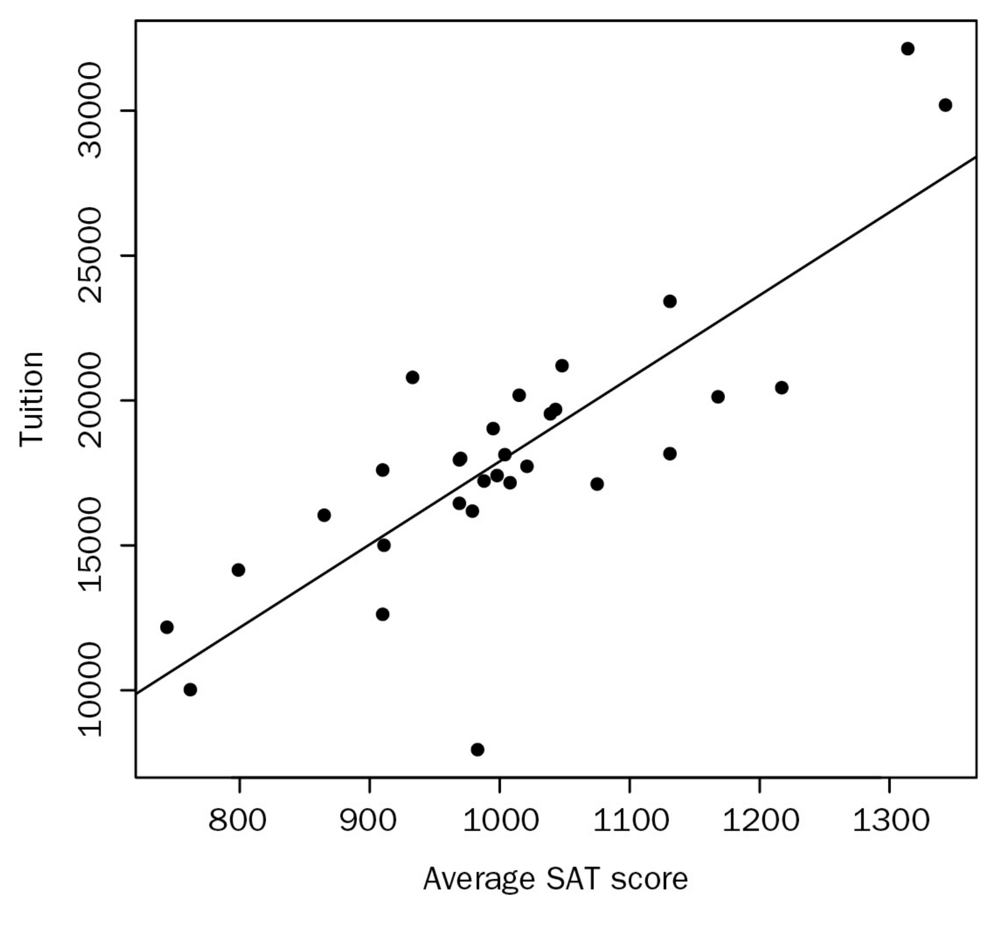
SAT scores vs. tuition at 31 North Carolina colleges. The line slopes upward: each extra SAT point ≈ $28 more tuition.
Linear regression — "the statistical technique that is to social science as the screwdriver is to home repair" — makes it dangerously easy to draw a line through data and project it wherever you like. Each extra SAT point at North Carolina colleges corresponds to about $28 more tuition. Raise SAT 50 points, charge $1,400 more. The regression is useful locally but catastrophic when extended. "I said linear regression was like a screwdriver," Ellenberg writes, "but in another sense, it's more like a table saw." It does powerful work, but it can also take your hand off if you're not paying attention.
The "math wars" in education pit traditionalists (memorization, fluency, algorithms, exact answers) against reformists (meaning, guided discovery, approximation). "At a math dinner party it's okay to bring up politics or religion, but start an argument about math pedagogy and it's likely to end with somebody storming out." Ellenberg takes neither side. You cannot throw out multiplication tables — you will never achieve mental flow if you need a calculator for 6×8. But some classical algorithms (extracting square roots by hand) can be safely discarded. David Mumford, a Fields Medalist, has suggested replacing plane geometry with a first programming course, since both require assembling simple components into sequences that accomplish meaningful tasks. The goal is "a mathematics that values precise answers but also intelligent approximation, that demands fluency but also the horse sense to work things out on the fly."
A paper in the journal Obesity announced that by 2048, every American would be overweight or obese. ABC News covered the "obesity apocalypse." The Long Beach Press-Telegram ran "We're Getting Fatter." The methodology was straightforward: plot the upward trend in overweight prevalence from NHANES data (National Health and Nutrition Examination Study), draw a linear regression line, and extend it until it crosses 100%. In the early 1970s, just under half of Americans were overweight (BMI ≥ 25). By the early 1990s: almost 60%. By 2008: almost 75%. The trend looked linear, and the line pointed to 100% by 2048. The problem, of course, is that by 2060 the same line gives 109% overweight — a physical impossibility. The thin, as Ellenberg notes, "we have always with us."
The curve must flatten as it approaches 100%, because there are fewer and fewer non-overweight people left to convert. Indeed, just four years after the paper, NHANES data showed the upward march had already begun to slow. Even worse: the authors broke data by ethnic group and sex, finding that black men's obesity rate was growing at half the overall rate — their line wouldn't cross 100% until 2095. In 2048, only 80% of black men would be overweight. But if ALL Americans are supposed to be overweight by 2048, where are the 20% non-overweight black men? "Offshore?" The basic contradiction went unmentioned in the paper. "It's the epidemiological equivalent of saying there are -4 grams of water left in the bucket. Zero credit."
The real lesson is about sample size and the Law of Large Numbers. South Dakota has the highest rate of brain cancer in America (5.7 per 100,000 versus a national average of 3.4), followed by Nebraska, Alaska, Delaware, and Maine. The five states with the lowest rates? Wyoming, Vermont, North Dakota, Hawaii, and DC. Of the nine states at the extremes, the largest is Nebraska (37th most populous). Tiny states dominate both the top and the bottom of the ranking. Living in a small state either makes you much more or much less likely to get brain cancer — which makes no sense at all.
A coin-flipping game explains why. Team Small flips 10 coins each; Team Big flips 100. Score by percentage of heads: among 100 Small players, at least one will likely get 80% or 90% heads. None of the Big players will come close. "The more coins you throw, the more likely you are to be close to 50-50." J.E. Kerrich, a South African mathematician who made an ill-advised visit to Europe in 1939 — "his semester abroad quickly turned into an unscheduled stint in an internment camp in Denmark" — flipped a coin 10,000 times and tracked the fraction of heads. It converges inexorably toward 50%, "as if squeezed by an invisible vise." The typical discrepancy from 50-50 grows with the square root of the sample size, so 100 times as many coins produces discrepancies only 10 times as large in absolute terms.
Abraham de Moivre discovered that these discrepancies follow a perfect bell curve — the normal distribution, which Francis Ysidro Edgeworth unsuccessfully proposed calling "the gendarme's hat." If you flip N coins, your chance of landing within √N of 50% heads is about 95.45%. North Carolina exploited this principle backwards: the top 25 elementary schools by test-score improvement were disproportionately tiny schools. Thomas Kane and Douglas Staiger showed that 28% of the smallest schools made the top 25 at some point, versus only 7% of all schools. But small schools also dominated the bottom. "Riverside Elementary is no more one of the top schools in North Carolina than Armon Johnson is the sharpest shooter in the league" — Johnson appeared in one NBA game, took one shot, and made it. 100% shooting percentage.
The so-called law of averages — five heads in a row means tails is "due" — is flatly false. Coins have no memory. After 10 heads in a row, the next flip is still 50-50. The Law of Large Numbers works not by balancing past results but by diluting them. Flip 1,000 more times after 10 heads: you will get roughly 500 heads out of 1,000, making the total 510 out of 1,010 — very close to 50%. The past didn't change; it just got swamped by new data until it was "so proportionally negligible that it can safely be forgotten."
De Moivre saw the regularities in coin flips as "the work of God's hand itself." Dangerous thinking — it leads people to believe that luck must "balance out," that a gambler on a losing streak is owed a win. Three sons means a daughter is due. But birth has no memory any more than a coin does. The deeper implications reach from political polls (less reliable with fewer voters) to NBA shooting percentages (the league restricts rankings to players above a minimum playing-time threshold) to brain cancer rates in tiny states. Wherever sample sizes are small, variation is large, and wherever variation is large, the extremes are occupied by the small, not the genuinely exceptional.
Jakob Bernoulli gave the first precise statement and proof of the Law of Large Numbers in the early 18th century; Siméon-Denis Poisson gave it the name la loi des grands nombres in the early 1800s. Between them, they established one of the most fundamental and most misunderstood facts in all of mathematics: large samples are more reliable than small ones, not because the universe is fair, but because arithmetic is relentless. The average of a thousand measurements is closer to the truth than the average of ten, not by divine decree, but by the cold geometry of the bell curve.
When 1,074 Israelis were killed by Palestinians between 2000 and 2005, Daniel Byman of Georgetown wrote in Foreign Affairs that this was "the proportional equivalent of more than 50,000 dead and 300,000 wounded for the United States." This "how much is that in dead Americans" calculation is standard rhetoric. The U.S. House (December 2001) called 26 Israeli deaths the equivalent of 1,200 American ones. Newt Gingrich (2006) called 8 Israeli deaths almost 500 American ones. Ahmed Moor in the LA Times applied the same logic to Palestinian casualties: 1,400 dead in Gaza equals 300,000 Americans proportionally. Gerald Caplan in the Toronto Star calculated that 45,000 Nicaraguan casualties equaled 3 million Americans.
Push the logic even slightly and it collapses. The 1,074 Israeli deaths are also proportionally equivalent to 223,000 Chinese, 7,700 Spaniards, 300 Slovenes, or "one or two Tuvaluans" (population 9,847). "When there are two men left in the bar at closing time, and one of them coldcocks the other, it is not equivalent in context to 150 million Americans getting simultaneously punched in the face." Rwanda wiped out 11% of its population in 1994 — clearly among the worst crimes of the century. But nobody says it was "nine times as bad as the Holocaust" proportionally. "And to do so would set teeth rightly on edge." This is "lineocentrism in its purest form" — the assumption that scaling linearly preserves meaning.
Stephen Pinker's Better Angels of Our Nature uses proportional thinking to argue the world has grown less violent. The 20th century looks catastrophic only because populations are large — the Thirty Years' War killed 1 in 100 people on Earth, equivalent today to 70 million, dwarfing both world wars combined. Proportional thinking illuminates here because the question is genuinely about rates: was a random person more likely to die violently in 1618 or 1944? But when the question is about absolute human suffering — is 800,000 dead Tutsis worse than 26 dead Israelis? — proportional thinking is obscene, not illuminating.
The rule of thumb: if the magnitude of a disaster makes it natural to speak of "survivors," then proportional thinking is appropriate. You can call any Tutsi living in Rwanda a survivor of the genocide (75% of the Tutsi population was wiped out). It is absurd to call someone in Seattle a "survivor" of the World Trade Center attack (0.001% of Americans died). When the word "survivor" feels right, proportion is the right lens. When it feels grotesque, proportion is the wrong one.
Even testing mathematical methods requires hygiene: compute the same thing several ways and check whether the answers agree. The 2004 Madrid train bombings killed about 200 people. Scale by national population (Spain vs. US): equivalent to 1,300 Americans. Scale by city population (Madrid vs. New York): 463. Scale by province of Madrid vs. state of New York: about 600. Three different and incompatible answers from the same data — a red flag that the method itself is unreliable. "The question of whether one war was worse than another is fundamentally unlike the question of whether one number is bigger than another. The latter question always has an answer. The former does not."
The most honest approach to understanding 26 people killed by terrorism, Ellenberg argues, requires no math at all: "Imagine twenty-six people killed by terrorist bombings — not halfway across the world, but in your own city. That computation is mathematically and morally unimpeachable, and no calculator is required." Atrocities form a partially ordered set — some pairs can be meaningfully compared, others cannot. The desire to rank every horror on a single numerical scale is itself a form of false linearity, and resisting it is part of mathematical maturity.
The chapter makes a subtle but important distinction between proportions and absolutes that echoes throughout the book. In the brain cancer example (Chapter 3), the issue was too small a denominator producing misleading rates. Here the issue is applying proportions across incomparably different denominators. Both errors stem from the same root: treating a ratio as if it were a fixed property of the numerator, when in fact the choice of denominator determines the entire meaning. "Dividing one number by another is mere computation; figuring out what you should divide by what is mathematics."
Robert McNamara calculated that 4 million Vietnamese deaths were proportionally equivalent to 27 million Americans. Whether this comparison made McNamara more or less willing to prosecute the war is a question Ellenberg leaves to the reader. But the mathematical observation is clear: the same rhetorical device — scaling by population — can be used to argue for intervention (look how terrible their losses are!) or against it (imagine if we suffered proportionally!). A tool that can argue both sides of any question equally well is not a tool for finding truth. It is a tool for persuasion, and recognizing the difference is what separates mathematical thinking from its abuse.
Between 1990 and 2008, the United States gained 27.3 million net jobs. Of these, 26.7 million (98%) came from the nontradable sector — government, health care, retail, food service. Michael Spence and Sandile Hlatshwayo published these figures, and they were widely reported in The Economist and Bill Clinton's book as proof that globalization had gutted American tradable employment. But the tradable sector grew by only 620,000 jobs net, and between 2000 and 2008 it actually lost 3 million jobs while the nontradable sector added 7 million — making the nontradable sector responsible for 175% of total job growth during that period. More pie than plate. The 98% figure is technically correct but deeply misleading, because the denominator is so close to zero that tiny fluctuations produce absurd percentages.
The problem is percentages of numbers that might be negative, or close to zero. Even negative numbers themselves were once controversial — sixteenth- century algebraists Cardano and François Viète debated whether negative times negative equals positive, and Cardano called negative solutions ficta (fake). A coffee shop example makes the issue concrete: you lost $500 on coffee but made $750 on the pastry case and $750 on the CD rack. Total profit: $1,000. The pastry case accounts for 75% of profits. But the CD rack ALSO accounts for 75% — and if coffee losses had been $500 larger, total profit would be $500 and pastry would account for 150% of profits. Make coffee losses $1,000 larger and total profit is zero — pastry accounts for infinity percent of profits.
Steven Rattner reported in the New York Times that 93% of additional income created in 2010 went to the top 1%, using Piketty-Saez data. His infographic showed 37% to the top 0.01%, 56% to the rest of the top 1%, and just 7% to the bottom 99%. But the top 10%-but-not-1% (family doctors, non-elite lawyers, engineers averaging about $161,000) also gained income, accounting for about 17% of the total. That's 93% + 17% = more than 100%. "More pie than plate." This works because the bottom 90% actually had lower income in 2011 than 2010 — their share was negative. In 1992, the top 1% accrued 131% of national income gains. Negative numbers again.
Dividing one number by another is mere computation; figuring out what you should divide by what is mathematics. Jordan Ellenberg
Mitt Romney's campaign in April 2012 claimed "women account for 92.3% of all jobs lost under Obama." Technically correct: from January 2009 to March 2012, total employment fell by 740,000 and women's employment fell by 683,000. The arithmetic checks out: 683/740 = 92.3%. But shift the start date by just one month to February 2009, and the total net loss shrinks to only 16,000 — while women still lost 484,000. Now women account for over 3,000% of all job losses. "That would have signaled to any but the thickest voters that this percentage was somehow not the right measure."
The real story was more nuanced and less politically useful. During the recession (January 2009 to February 2010), men lost 2,971,000 jobs while women lost 1,546,000. During the recovery (February 2010 to March 2012), men gained 2,714,000 and women gained 863,000. Men took it worse in the downturn AND bounced back harder in the recovery, so their losses and gains nearly canceled. Women's didn't. The 92.3% figure was, as the Washington Post put it, "true but false" — arithmetically correct but designed to create an impression that the underlying data does not support. Much like saying "Mitt Romney has never denied allegations that for years he's operated a bicontinental cocaine-trafficking ring in Colombia and Salt Lake City" — also 100% true, also deliberately misleading.
The Wisconsin jobs controversy from June 2011 illustrates the same principle at the state level. The Republican Party of Wisconsin touted that their state had created 9,500 jobs when the nation added only 18,000 — "over 50% of U.S. job growth came from our state." But Minnesota (with a Democratic governor) added 13,000 jobs, and Texas, California, Michigan, and Massachusetts all outpaced Wisconsin too. Job losses in shrinking states roughly canceled out job gains in growing ones, making the national net total tiny — and every growing state could claim an absurdly large share of it. The lesson is the same in every case: don't talk about percentages of numbers when the numbers might be negative, or so close to zero that the percentage becomes meaningless.
What unifies all these examples — the Spence- Hlatshwayo job study, the Rattner income inequality graphic, the Romney campaign's 92.3%, the Wisconsin boast — is a single mathematical error dressed up in different political clothes. When the denominator of a fraction can be negative or near zero, the fraction itself carries no useful information. The numerator and denominator must be examined separately, on their own terms. The choice of what to divide by what is not a computational step but a conceptual one, and getting it wrong is not a rounding error but a category mistake. "Dividing one number by another is mere computation; figuring out what you should divide by what is mathematics."
Ellenberg connects this back to the history of negative numbers themselves: concepts we now take for granted were once deeply contentious. The same intellectual resistance that made Cardano call negative solutions ficta in the sixteenth century persists in the twenty-first whenever we pretend that percentages of near-zero quantities tell meaningful stories. Mathematical progress consists partly of accepting uncomfortable truths about numbers and partly of learning when familiar operations (like division) stop making sense. Both lessons apply far beyond the classroom — to boardrooms, campaign war rooms, and newspaper front pages where percentages are wielded like weapons precisely because most readers assume they always mean what they appear to mean.
You receive ten consecutive correct stock predictions by mail. On week eleven, the broker asks for your money. The odds of getting ten right by chance are (1/2)¹&sup0; = 1 in 1,024 — surely this is genius. But here is the trick: the broker sent 10,240 letters on week one, half predicting up and half predicting down. After each round, the half who got the wrong prediction were discarded. After ten weeks, exactly ten people have seen ten perfect picks, "no matter what the stock market does." The broker didn't predict anything — he just sent enough letters to guarantee that a tiny fraction of recipients would see a perfect record. The real-world version: Derren Brown's 2008 TV show mailed horse-racing predictions to thousands of Britons, gradually winnowing the list until one person was utterly convinced she had found a foolproof system.
Mutual fund "incubation" exploits the same logic. Companies launch many funds in-house, track them privately, and only make the winners public. The underperformers are "mercy-killed, often without any public notice." Surviving incubated funds don't maintain their prenatal performance — they roughly match the median fund. "Eat your vegetables and take the stairs" — put your money in a big dull low-fee index fund. "You've been swayed by the impressive results, but you don't know how many chances the broker had to get those results." Ellenberg's son plays Scrabble by dumping and redrawing tiles until he gets good letters. "He has no way of knowing what letters he's going to draw! But if you give yourself enough chances, you'll eventually come across that Z you're waiting for."
The Bible Code is the Baltimore Stockbroker parable writ large. In the mid-1990s, Eliyahu Rips and colleagues at Hebrew University searched the 304,805 characters of Genesis for "equidistant letter sequences" (ELS) — characters plucked at regular intervals — and found the names and dates of 32 notable rabbis appearing in proximity far more often than chance would predict. The study was published in Statistical Science with an unusual editor's preface from Robert Kass: "Our referees were baffled... offered as a challenging puzzle." Michael Drosnin turned it into a 1997 bestseller, claiming the Torah predicted Rabin's assassination, the Gulf War, and Comet Shoemaker-Levy 9. He appeared on Oprah and met with Arafat and Peres.
The controversy split Orthodox Jewish mathematicians at Harvard — David Kazhdan was open to the codes, while Shlomo Sternberg called it "a hoax" in the Notices of the AMS. A distinguished rabbi at a Purim dinner asked a code adherent what he would do if the codes said the Sabbath was on Sunday. The young man said he'd have to think about it. The rabbi concluded that a system capable of challenging fundamental religious law must be rejected — it was "about as authentically Jewish as a bacon cheeseburger."
Brendan McKay of Australia and Dror Bar-Natan of Hebrew University cracked the code by exploiting the researchers' hidden degrees of freedom. Medieval rabbis had no passports — Rabbi Avraham ben Dov Ber Friedman could be searched as "Rabbi Avraham," "HaMalach," "Rabbi Avraham HaMalach," or several other appellations. Using equally valid alternative names, the Torah lost its predictive magic — but War and Peace in Hebrew translation suddenly nailed the rabbinical dates perfectly. Not because Tolstoy encoded rabbis, but because with enough wiggle room in how you define your search terms, any sufficiently long text will produce impressive matches for some list.
Drosnin dared critics to find assassination predictions in Moby Dick. McKay promptly found ELS sequences for the assassinations of JFK, Indira Gandhi, Leon Trotsky, and Drosnin himself. Simcha Emanuel, a Talmud professor at Tel Aviv, drew up an independent appellation list not designed to favor either text. The Torah did only slightly better than chance. The wiggle room in name selection was the entire source of the "miracle."
R.A. Fisher captured the deeper principle decades earlier: "The 'one chance in a million' will undoubtedly occur, with no less and no more than its appropriate frequency." The Baltimore Stockbroker, the Bible Code, mutual fund incubation, and Ellenberg's son's Scrabble strategy are all instances of the same phenomenon: given enough attempts, improbable outcomes are guaranteed. The question is never "is this result improbable?" but "how many opportunities existed for an improbable result to appear?"
If we reject Bible codes despite their passing standard significance tests — because we understand the mechanism that produced the results — then what does that say about the reliability of standard significance tests in general? "It says you ought to be a little worried about them." The codes are a gateway drug to the much larger crisis in statistical reasoning that the next four chapters will explore: dead fish reading minds, jelly beans causing acne, and the uncomfortable possibility that a great deal of published science is, in Ellenberg's delicate phrasing, "the result of a process that is occasionally correct, but not for the right reasons."
Craig Bennett presented at the 2009 Human Brain Mapping conference a paper titled "Neural correlates of interspecies perspective taking in the post-mortem Atlantic Salmon." The methods section stated that the subject "was approximately 18 inches long, weighed 3.8 lbs, and was not alive at the time of scanning." A dead fish was placed in an fMRI scanner, shown photographs of humans in various social situations, and found to exhibit brain activity correlated with correct emotional assessment. Two voxel clusters in the salmon appeared to "empathize" with humans — one in the medial brain cavity, one in the upper spinal column. The point was deadly serious: an fMRI divides the brain into tens of thousands of tiny volume units called voxels, and random noise in each means some will spike at exactly the right moment by pure chance. Most neuroimaging papers Bennett surveyed did not use multiple-comparisons correction, the statistical safeguard against exactly this kind of false positive.
The dead salmon joins a long tradition of significance testing gone wrong. B.F. Skinner — a frustrated novelist who had received encouraging words from Robert Frost at the Bread Loaf conference before abandoning fiction for behaviorism — tried to debunk Shakespeare's alliteration using null hypothesis testing. His hypothesis: Shakespeare picked initial letter sounds randomly. He analyzed 100 sonnets, and Shakespeare "failed" the significance test. Skinner concluded: "Shakespeare might as well have drawn his words out of a hat." But Skinner was wrong — his test was underpowered, "the equivalent of looking at the planets with binoculars." Shakespeare used alliteration deliberately but with restraint. Fellow Elizabethan George Gascoigne had mocked ham-fisted overuse a generation earlier: Crambe bis positum mors est — cabbage served twice is death.
The most famous victim of underpowered testing is the basketball "hot hand." In 1985, Gilovich, Vallone, and Tversky analyzed every shot from the 1980-81 Philadelphia 76ers. Julius Erving: after three straight baskets, he shot 48% (versus 52% overall). Darryl "Chocolate Thunder" Dawkins: after a hit, 57%; after a miss, 73% — the opposite of a hot hand. (Possible explanation: after misses, Dawkins drove to the basket for his trademark backboard-shattering dunks, which he named "In Your Face Disgrace" and "Turbo Sexophonic Delight.") The researchers broke seasons into 4-shot sequences and found the data matched pure chance perfectly. No hot hand.
Tversky boasted: "I've been in a thousand arguments over this topic. I've won them all, and I've convinced no one." The reason nobody was convinced is that the test was, once again, too weak. Korb and Stillwell (2003) simulated data where players genuinely ran hot for two 10-shot intervals per game, with shooting jumping to 90%. The Gilovich-Vallone-Tversky test still failed to detect the hot hand more than 75% of the time. The binoculars couldn't see the planets even when the planets were right there.
Yigal Attali (2013) found a further complication: players who just made a three-pointer were much more likely to attempt another long shot than after a miss. The hot hand may genuinely exist but cancel itself out — confidence breeds overconfidence, which leads to harder shots, which reduces accuracy back to baseline. Huizinga and Weil (2009), using a larger dataset, found that players who just made a basket take demonstrably harder shots next time. "The nature of the analogous phenomenon in stock investment is left as an exercise for the reader."
The unifying theme is that a test too weak to detect a real effect will tell you the effect doesn't exist, which is not the same thing at all. An underpowered study is like searching for your lost keys only under the streetlight: the failure to find them there doesn't prove they don't exist. The dead salmon, Shakespeare's sonnets, and the basketball hot hand all looked negative because the tools used to examine them were too crude. "Improbable things happen a lot," and the corollary: probable things sometimes hide from underpowered tests.
North Carolina's Cash 5 lottery drew the same five numbers (4, 21, 23, 34, 39) on two drawings just three days apart. Any specific pair of lottery draws has about a 1 in 300 billion chance of matching. Miraculous? Only if you forget that hundreds of lottery games run thousands of draws over many years. With so many chances, some coincidence is not just possible but inevitable. Aristotle got there first: "It is probable that improbable things will happen." The dead salmon got p < 0.05 not because fish read minds but because tens of thousands of voxels had tens of thousands of chances to light up at random.
Bennett's paper eventually won an Ig Nobel Prize and is now used in neuroscience courses worldwide as a cautionary tale. The real scandal, Bennett noted, is not the dead fish but the living neuroscientists: the majority of fMRI papers he surveyed used no correction for multiple comparisons. They were, in effect, running the same experiment as the fish scan — testing tens of thousands of voxels and credulously reporting whatever spiked — but with actual humans in the scanner, generating actual conclusions about the human brain. The difference between the fish and the humans was not the statistics. It was the expectations.
The null hypothesis significance test (NHST) works by reductio ad absurdum, one of the oldest and most powerful tools in logic. Assume the thing you want to disprove and show it leads to a contradiction. If someone claims 200 children were killed by guns in DC in 2012, but DC had only 88 total homicides that year, the claim is impossible. That is a clean reductio. The Pythagoreans used the same structure to prove that √2 is irrational: assume √2 = m/n in lowest terms, derive that both m and n must be even (which contradicts "lowest terms"), and conclude the assumption was false — "so awesomely paradigm-busting they had to kill its author." Significance testing is the fuzzy version: assume the null hypothesis, compute the probability of your observed data (the p-value), and reject if p is small enough. "Reductio ad unlikely."
The crucial weakness is right there in the name: unlikely is not impossible. Joseph Berkson of the Mayo Clinic devised a devastating thought experiment. Fifty subjects are hypothesized as human. You observe that one is an albino — something occurring in about 1 in 20,000 humans. The probability of seeing an albino in a group of 50 humans is below 0.0025, well under the standard 0.05 threshold. By NHST logic, reject the null hypothesis: the subjects aren't human. Absurd! Or consider that North Carolina's Cash 5 lottery drew numbers 4, 21, 23, 34, 39 on two drawings just three days apart. Any specific pair of draws has about a 1 in 300 billion chance. Should we declare the lottery rigged every Thursday? "Impossible and improbable are not the same — not even close."
John Michell, an 18th-century English astronomer and clergyman, pioneered the statistical approach to astronomy. Were the Pleiades a real cluster or a random alignment of unrelated stars? Michell computed the probability of six stars appearing so close together by chance: about 1 in 500,000. He concluded they must be a genuine physical cluster — and they are, a group of several hundred adolescent stars. Fisher saw explicit analogy between Michell's reasoning and the classical reductio. The significance test worked here. But a diagram of random dots on a page reveals that visible clumps are inevitable. A second diagram with NO clumps looks LESS random — it reveals "a built-in disinclination to crowd." The appearance of clustering is a feature of randomness, not evidence against it.
Yitang "Tom" Zhang proved in 2013 that prime numbers cluster too — there are infinitely many pairs of primes within some fixed distance of each other. Zhang's backstory makes the result even more remarkable: a star student at Beijing University, he came to the US for a PhD but his career stalled. He hadn't published since 2001. He worked at a Subway restaurant. A former student tracked him down and got him a lectureship at the University of New Hampshire. Then he proved what the biggest names in number theory had failed to prove, and the mathematical world was stunned.
It is probable that improbable things will happen. Aristotle
The British birth-control pill scare of October 1995 illustrates what happens when the reductio ad unlikely is applied without judgment. The UK Committee on Safety of Medicines sent a "Dear Doctor" letter warning that third- generation oral contraceptives doubled the risk of thrombosis. AP's headline: "Pills kill." Twelve percent of women stopped the pill immediately, and England and Wales saw 26,000 more conceptions and 13,600 more abortions in 1996. But "doubled" meant the risk went from 1 in 7,000 to 2 in 7,000. "Twice a tiny number is a tiny number." A CSM supporter estimated the total embolism deaths prevented by the warning: "possibly one." The statistical significance of the doubling was real; its practical significance was negligible.
A CUNY study found that infants in home day care had seven times the fatality rate of those in day-care centers. But the actual rate was 1.6 deaths per 100,000 versus 0.23 — roughly 12 babies per year in the entire country. The additional car-accident risk from driving to the fancier, farther day-care center might wipe out any safety advantage. "The null hypothesis, if we take it literally, is probably just about always false" — with powerful enough equipment, you can detect effects so minuscule they should be safely ignored. Ellenberg wishes the field had chosen a different name: "statistically noticeable" rather than "statistically significant."
R.A. Fisher understood all of this. He saw the significance test as "the detective, not the judge" — a tool for flagging phenomena worthy of further investigation, not for rendering final verdicts. Near the end of his life, in 1956, he wrote: "No scientific worker has a fixed level of significance at which from year to year, and in all circumstances, he rejects hypotheses; he rather gives his mind to each particular case in the light of his evidence and his ideas." The rigid 0.05 threshold that dominates modern science — the threshold that lets dead fish read minds and doubled-but- tiny risks trigger national panics — would have appalled even the man who invented it.
Replication is science's immune system. If a finding is real, another lab should be able to reproduce it. But journals have traditionally preferred novel results over replications, and failed replications end up in the file drawer where nobody sees them. This creates an asymmetry where false positives accumulate in the literature while the corrections never arrive. The problem is not that the reductio ad unlikely is invalid — it is a fine logical structure. The problem is that we have confused "unlikely" with "impossible" and forgotten that the detective's job is to investigate, not to convict.
An xkcd comic captures the problem with lethal precision: scientists test twenty colors of jelly beans for a link to acne. Nineteen show no effect (p > 0.05). Green jelly beans get p < 0.05. Newspaper headline: "GREEN JELLY BEANS LINKED TO ACNE! 95% Confidence." The joke writes itself: if you run twenty tests at the 0.05 level, you expect one false positive. If twenty independent labs study the same question, nineteen find nothing, and the one that gets lucky is the one that publishes. The nineteen failures go into the file drawer where nobody can learn from them. "They got lucky — but they don't know they got lucky. They're running the con on themselves."
P-hacking, a term coined by Uri Simonsohn at Penn, describes what happens when scientists with p = 0.06 — tantalizingly close to the threshold — start tweaking their analysis. Delete an outlier. Control for age. Control for weather. Split the sample by gender. Each adjustment is individually defensible, but the cumulative effect is to give the researcher many bites at the apple. "Torturing the data until it confesses." The torture is usually not malicious — the scientist genuinely believes the effect is real and finds reasons why each tweak produces a more "correct" analysis.
The telltale signature of p-hacking is visible in the published literature. Graph the distribution of p-values from papers across disciplines — political science, economics, psychology, sociology. If all null hypotheses were true (the hypothetical "International Journal of Haruspicy"), p-values between 0 and 0.05 would be evenly distributed. If real effects exist, the graph should slope downward (more very-low p-values). What the actual data shows is a suspicious upward bump just below 0.05 — more papers reporting p = 0.049 than p = 0.051 than should occur by chance. "That slope is the shape of p-hacking."
Scientists who cannot hack their way below the magic number resort to increasingly desperate verbal formulations: "almost statistically significant," "leaning toward significance," "a trend toward significance," or the poignant "hovers on the brink of significance." Ellenberg imagines the Journal of Haruspicy — a journal devoted to the ancient practice of reading the future in animal entrails — where every 20th paper would nonetheless achieve p < 0.05 and be published as a genuine finding. The journal would accumulate a body of "knowledge" that was pure noise, and no reader would ever know.
Confidence intervals offer a partial alternative. Rather than testing only whether the null hypothesis can be rejected, they test a range of alternatives. An artisanal pinking-shears A/B test shows purchases up 10% with p = 0.03. Exciting — but is the real effect 5% or 25%? A confidence interval of [+3%, +17%] says the effect is positive but maybe not huge. An interval of [-0.5%, +0.5%] says the intervention does essentially nothing. An interval of [-20%, +20%] says we have no idea. The confidence interval forces you to confront not just whether an effect exists but how large it might be — a much more useful question.
Jerzy Neyman and Egon Pearson developed confidence intervals from a philosophy of statistics fundamentally different from Fisher's. Neyman-Pearson: "the purpose of statistics isn't to tell us what to believe, but to tell us what to do." A significance test is a decision rule, like a criminal trial that follows procedure rather than seeking cosmic truth. Fisher hated this view passionately — he wanted scientists to form opinions, to exercise judgment, not to follow a mechanical rule. In a 1951 letter to W.E. Hick, he dismissed the entire Neyman- Pearson approach. The disagreement between Fisher and Neyman-Pearson was not about mathematics but about the philosophy of science, and it remains unresolved.
The reform movement has begun to address the worst abuses. Psychological Science (2013) started publishing Registered Replication Reports — studies accepted for publication before results are known, so there is no incentive to hack. The Many Labs project replicated 13 high- profile findings and confirmed 10 of them, which is encouraging but also means 3 out of 13 widely cited results could not be reproduced. Fisher, near death in 1956, wrote: "No scientific worker has a fixed level of significance at which from year to year, and in all circumstances, he rejects hypotheses; he rather gives his mind to each particular case in the light of his evidence and his ideas." The rigid threshold he never intended has become the gatekeeper of scientific publication, and loosening its grip is the great statistical reform project of the twenty-first century.
The deeper issue is that living by the 0.05 threshold is like defining "recession" so rigidly that you would ignore unemployment, housing starts, and consumer spending if the two-quarters-of-negative-GDP definition weren't technically met. No sensible person would do this — they would look at the full picture. "The critics say that a great deal of scientific practice is nuts in just this way." The significance test was meant to be one tool among many, a preliminary screening device. It has become instead a binary stamp of approval: pass or fail, publish or perish. That transformation is the real scandal — not the dead fish, not the jelly beans, not the file drawer, but the abdication of scientific judgment in favor of a mechanical rule that nobody's inventor would have endorsed.
Target's predictive algorithm correctly inferred that a Minnesota teenager was pregnant — from her purchases of unscented lotion, mineral supplements, and cotton balls — before her father knew. Her father stormed into a Target store demanding to know why his daughter was receiving coupons for baby clothes. The manager apologized. A few days later, the father called back to apologize himself: "It turns out there's been some activities in my house I haven't been completely aware of." Impressive, even spooky. But maybe we should worry more about crappy algorithms than eerily good ones. More data doesn't always help: asteroid tracking improves with data, but weather forecasting hits a hard wall around two weeks because of chaos theory — Edward Lorenz discovered that "one flap of a sea gull's wing would be enough to alter the course of the weather forever."
Bayesian inference offers a fundamentally different framework from NHST. Consider three theories about a roulette wheel: RED (biased 60% to red), FAIR (50/50), and BLACK (biased 60% to black). Start with a prior: 90% probability the wheel is FAIR, 5% each for RED and BLACK. Observe five reds in a row. The probability of RRRRR under each theory: RED gives (0.6)&sup5; = 7.76%, FAIR gives (0.5)&sup5; = 3.125%, BLACK gives (0.4)&sup5; = 1.024%. Update via Bayes's Theorem: RED climbs from 5% to 12%, FAIR drops from 90% to 86.5%, BLACK falls to 1.5%. The evidence doubled your belief in RED but didn't overthrow FAIR, because FAIR started with such a strong prior.
A cynic who starts with equal priors (1/3 each) and sees the same five reds would jump to 65% confidence in RED. A trusting soul with 98% prior on FAIR would barely budge, giving RED only 2.5%. "How much you believe something after you see the evidence depends not just on what the evidence shows, but on how much you believed it to begin with." This troubles people who want science to be objective. But nobody actually ignores priors: a new cancer drug with p < 0.05 is probably real. The same results from putting patients in a plastic replica of Stonehenge? You would think they got lucky.
The Facebook terrorist detector thought experiment makes the case precisely. Imagine an algorithm that flags users as "twice as likely to be terrorists." With 200 million users and perhaps 10,000 actual future terrorists (1 in 20,000), the algorithm flags 100,000 people. Among those flagged: 10 actual terrorists and 99,990 innocent people. Your neighbor is on the list — there is a 99.99% chance he is innocent. The p-value approach says reject the null (innocent): the chance of an innocent person landing on the list is below 0.05%. But what we actually want to know — the probability that our neighbor is guilty given the flag — is entirely different, and Bayes's Theorem gives the correct answer: almost certainly innocent.
William Paley's watchmaker argument for God illustrates the power and limits of Bayesian reasoning. Find a watch on a heath; infer a maker. Complex life; infer God. Using Bayesian computation with the principle of indifference (equal priors for GOD and NO GOD), the sheer improbability of human existence under NO GOD makes GOD overwhelmingly likely. But now add GODS (a committee of gods — "I'm thinking pandas") with the same prior probability, and Bayesian inference favors GODS over GOD. Add SIMS (Nick Bostrom's simulation hypothesis) and SIMS wins most decisively of all. "If we took this approach seriously, we would tell our tenth graders" that the simulation hypothesis is the best-supported explanation for our existence. "Think the school board would go for this?" On this matter, Ellenberg concludes, "math is silent." Pascal in Pensées: "God is, or He is not. But to which side shall we incline? Reason can decide nothing here."
Two sequences — RRRRR and RBRRB — are equally improbable. But RRRRR activates a theory (RED) with non- negligible prior probability. RBRRB doesn't activate any plausible theory at all. Our priors are "not flat, but spiky" — we assign mental weight to only a few theories out of the infinite space of possibilities. Under marijuana, every stimulus seems "intensely meaningful" because the drug flattens your priors. "A very interesting mental state to be in. But it's not conducive to making good inferences."
Conspiracy theories exploit Bayesian mechanics brilliantly. After the Boston Marathon bombing, someone says it was a government inside job (theory T). You assign 0.1 prior. Evidence rolls in: suspects identified, confessions, forensic evidence — each should lower T. But your friend adds theory U: the media and government are in on it together. T + U is harder to believe initially but becomes immune to counter-evidence, because every disconfirming piece of data is explained away as part of the cover-up. "T + U remains untouched" by any amount of real-world evidence. "Conspiracy theories are the multi-drug-resistant E. coli of the information ecosystem."
The college friend who bought 200 Cat-in-the-Hat-drinking- beer T-shirts at $4 each, sold 80 at $10 to recoup his investment, then wore a fresh one every day — everyone thought he was the dirtiest man in school when he was actually the cleanest. Sherlock Holmes said: "When you have excluded the impossible, whatever remains, however improbable, must be the truth." But Holmes should have said: "...unless the truth is a hypothesis it didn't occur to you to consider." The lesson of Bayesian inference is humility about our priors: what we don't know we don't know shapes our conclusions more than we realize, and "relying purely on null hypothesis significance testing is a deeply non-Bayesian thing to do."
Expected value — the probability- weighted average of all possible outcomes — is emphatically not the value you expect. Buy a $1 ticket in a lottery with 10 million combinations and a $6 million jackpot: the expected value is 60 cents. You will almost certainly win zero dollars, and 60 cents is merely what you would average over millions of plays, an observation that follows from the Law of Large Numbers. Lotteries evolved from seventeenth-century Genoa, where gamblers bet on which of 120 councilors would be drawn for public office every six months. By 1700, Genoa ran a number-drawing lottery with no election attached, and the idea spread across Europe. Adam Smith called lotteries "a tax on the stupid" in The Wealth of Nations, though his reasoning was flawed — he argued that buying more tickets makes you MORE likely to lose, when actually it doubles your chance of winning.
Edmond Halley, the astronomer who predicted the return of his famous comet, was among the first to apply expected value rigorously to public policy. Parliament was selling life annuities at the same price regardless of the buyer's age — a grandfather paid the same as a child. Halley used mortality statistics from Breslau (modern Wroclaw) to compute probability-weighted expected payouts and demonstrated how absurd the uniform pricing was. Even with a swollen Powerball jackpot of $337 million (the Donald Lawson drawing in August 2012), the bet stays bad: with 75 million players there is a 35% chance someone else also wins, taxes and lump-sum discounts eat the rest, and one memorable winner showed up with his girlfriend to cash a $10,000 ticket only to discover that most of it would go to delinquent child support owed to his ex-girlfriend — "this was the first the man's current girlfriend had heard of the man's child."
The exception that proves the rule is Cash WinFall, a Massachusetts lottery launched in fall 2004 where unjackpotted prize money "rolled down" to enhance lower-tier prizes. On normal days a $2 ticket had expected value around $0.80. On roll-down days — when the jackpot exceeded $2 million without being won — the match-4 prize jumped from $150 to $2,385, and the total expected value of a $2 ticket hit $5.53. James Harvey, an MIT senior doing an independent study comparing state lotteries, discovered the anomaly and formed a syndicate called Random Strategies (named after Random Hall dorm). They tripled their money on their first roll-down day.
Medical researcher Ying Zhang at Northeastern formed a rival group (the Doctor Zhang Lottery Club) and eventually quit doctoring to play full-time. Gerald Selbee, a seventy-year-old retiree from Michigan with a math degree, drove to Deerfield, Massachusetts with his wife Marjorie. Their first bet: 60,000 tickets, $50,000 profit. By 2007, over a million tickets per roll-down were flowing to three syndicates, and the match-4 prize had dropped from $2,300 to about $800. Still profitable. Random Strategies made $3.5 million over WinFall's seven-year life. Harvey bought a used 1999 Nissan Altima.
If gambling is exciting, you're doing it wrong. Jordan Ellenberg
Random Strategies' masterstroke came in August 2010. The jackpot sat at $1.675 million — below the $2 million roll-down threshold. Other cartels waited. Harvey quietly bought 700,000 tickets over the weekend, pushing the jackpot past $2.1 million. His group held 90% of the tickets and made $700,000 profit — a 50% return on a $1.4 million weekend investment. The lottery installed an early-warning system; Harvey tried again on Christmas Eve 2010, and the lottery announced the roll-down on Christmas morning, sending rival cartels scrambling to cancel vacations and buy tickets. Boston Globe reporters Andrea Estes and Scott Allen broke the story in July 2011. The state's defense? Harvey had visited lottery offices in January 2005, before his first bet, and they told him: "Sure, kid, knock yourself out."
This was not unprecedented. In eighteenth-century France, deputy finance minister Michel Le Peletier des Forts botched the math on a bond-lottery scheme, creating positive expected value. Mathematician Charles-Marie de La Condamine organized a ticket-buying cartel, and Voltaire (François-Marie Arouet) joined enthusiastically, writing cheeky mottoes on tickets: "All men are equal!" and "Long live M. Peletier des Forts!" The state eventually caught on, but not before La Condamine and Voltaire were rich for life. "What — you thought Voltaire made a living writing perfectly realized essays and sketches? Then, as now, that's no way to get rich."
Massachusetts didn't lose on Cash WinFall because the state kept 40 cents of every $2 ticket for commissions, operations, and city/town aid (roughly $900 million per year from all lottery games in 2011). The roll-down money was always earmarked as prizes — the state wasn't subsidizing the cartels, just paying out accumulated jackpot funds. The more tickets sold, the more 40-cent cuts the state collected. Over WinFall's lifetime, the total ticket count on roll-down days never exceeded 2.5 million — the breakeven point above which the cartels would have lost money. "The cartels weren't beating the house. They were the house." The state was the super-casino above them, indifferent to who won the prizes as long as the revenue kept flowing.
Additivity of expected value — E(X+Y) = E(X) + E(Y) — is the most important and most counterintuitive property of expected value. It seems obvious but ISN'T when you try to substitute "most likely value." Give a fortune randomly to one of three children. The most likely value for each child is $0 (2/3 chance of getting nothing). But the most likely value of the SUM is the whole estate. Most-likely values don't add. Expected values do — always, without exception, regardless of whether the random variables are correlated, independent, or adversarial. It is this additivity that makes expected value the right framework for evaluating any bet, any investment, any decision made under uncertainty.
George Stigler, the 1982 Nobel laureate in economics, declared: "If you never miss the plane, you're spending too much time in airports." The optimal strategy is not zero missed flights but whatever miss rate minimizes total discomfort. Three options: arrive two hours early (miss 2% of flights but waste two hours every trip), ninety minutes early (miss 5%), or one hour early (miss 15%). If a missed flight costs 6 utils of misery and each hour in the airport costs 1 util, the calculation is straightforward: Option 1 costs −2.12 utils, Option 2 costs −1.8 (best), Option 3 costs −1.9. The optimal point is in the middle — a Laffer curve of airport arrival times, with bad outcomes on both extremes. If you absolutely hate missing flights (−20 utils), arriving two hours early becomes worth it at −2.4, but arriving three hours early (−3.0) is always worse.
The same logic applies to government waste, with uncomfortable implications. The Social Security Administration paid $31 million to 1,546 dead people in one year. Outrageous — until you learn that this represents 0.004% of total disbursements. Eliminating that last sliver of waste would require verification systems costing more than the waste itself. "If you've never totaled your car, you drive too slow." The optimal amount of waste is not zero; it is whatever amount costs less to tolerate than to prevent. "What's the right amount of the taxpayer's money to be wasting?" A question nobody in politics dares ask honestly, but that expected-value reasoning answers clearly.
Blaise Pascal and Pierre de Fermat's 1654 correspondence gave birth to the mathematical theory of probability. Then Pascal had his "night of fire" on November 23, 1654 — a mystical experience so powerful that he documented it on a piece of parchment sewn into the lining of his coat, where it was found after his death. He largely withdrew from mathematics, telling Fermat that geometry was "so useless" he "can scarcely remember that there is such a thing." Pascal's Wager, from his posthumous Pensées, pushes expected value to its absolute limit: if God exists, the reward for belief is infinite (eternal life). Even a tiny probability times infinity equals infinity. The expected value of believing is infinite; the cost of believing is finite. Therefore: believe.
But the St. Petersburg paradox shows this logic breaks down. Flip a coin until tails; if tails on flip k, you win 2k ducats. The expected value is (1/2)(2) + (1/4)(4) + (1/8)(8) + ... = 1 + 1 + 1 + ... = infinity. Yet no sane person would pay a million ducats to play, let alone infinity. Daniel Bernoulli resolved the paradox in 1738: utility is not money. "A ducat in the hand of a rich man is not worth the same as a ducat in the hand of a peasant." Utility grows like the logarithm — twice as much money is not twice as good. Under logarithmic utility, the St. Petersburg game is worth exactly 2 utils. Finite, small, and sensible.
Different people have radically different utility curves, which means the same policy produces opposite behavioral predictions depending on whom you ask. Greg Mankiw, the Harvard economist: if taxes go up, he works less, because the marginal dollar buys diminishing returns of happiness. Like Reagan's movie stars. Fran Lebowitz, the writer: she drove a cab until she had enough for rent and food, then stopped and wrote. Money above her threshold had zero utility. If taxes go up, she works MORE — she needs more cab fares to reach the same threshold. Two utility curves, same tax increase, completely opposite responses. There is no universal utility curve, which is why economic policy debates never end.
Daniel Ellsberg — brilliant RAND analyst and Harvard PhD student, years before the Pentagon Papers made him famous — spent the late 1950s picking at the foundations of expected utility theory itself. His paradox involves an urn with 30 red balls and 60 black and yellow balls in an unknown ratio. People consistently prefer betting on red (known 1/3 probability) over black (unknown probability), and prefer NOT-RED (known 2/3) over NOT-BLACK (unknown 2/3). But RED + NOT-RED and BLACK + NOT-BLACK both guarantee exactly $100. How can one guaranteed $100 be preferred to an identical guaranteed $100? Expected utility theory cannot explain this preference; it requires assigning a util value to each bet, and the arithmetic of utils says the guaranteed payoffs must be equal.
Ellsberg's answer: known unknowns (risk) are fundamentally different from unknown unknowns (uncertainty). We can compute the expected utility of a bet on red because we know the probability. We cannot compute the expected utility of a bet on black because we don't know the probability, and guessing a probability to plug into the formula defeats the purpose. "Risky strategies can be analyzed numerically; uncertain strategies... were beyond the bounds of formal mathematical analysis." In the world of Cold War Washington and RAND, where game theory and decision theory were the intellectual currency, the idea that these tools might be fundamentally limited — "especially in contexts for which there was no precedent and thus no means of estimating probabilities, like, say, the instantaneous reduction of the human race to radioactive dust" — must have been, as Ellenberg dryly notes, "at least a little troubling."
The chapter's title comes back around: missing more planes is not a character flaw but a mathematical optimization. The person who never misses a flight is paying too high a price in wasted hours. The person who never makes a bad bet is being too cautious with their capital. The government that tolerates no waste is spending more on enforcement than it saves. The investor who demands certainty before acting will never act at all. In every case, the optimal strategy involves accepting some downside, because the cost of preventing every possible bad outcome exceeds the cost of the bad outcomes themselves. Expected value, corrected for utility and variance, is the compass — and the compass always points to the messy middle, never to the comfort of zero risk.
Selbee used Quic Pic (random numbers) for his Cash WinFall tickets. Harvey picked numbers by hand. Both strategies had the same expected value, so why would anyone bother with the extra effort? The answer is variance. A $50,000 sure thing and a 50/50 bet on losing $100,000 or gaining $200,000 have the same expected value ($50,000), but the bet can ruin you. For a corporation that can absorb the loss (−100 utils if it goes wrong, +200 if it goes right, expected utility +50), the gamble might be worth taking. For a poor person (−1,000 utils for the loss, +400 for the gain, expected utility −300), the same gamble is catastrophic. "The richer you are, the more risks you can afford to take."
"Picking up pennies in front of a steamroller" describes strategies with small frequent gains and rare catastrophic losses: 99% chance of making $1 million, 1% chance of losing $50 million. Positive expected value but lethal variance. Scale up with leverage and you get Long-Term Capital Management and the 2008 financial crisis. "If you're down a million bucks, it's your problem; but if you're down five billion bucks, it's the government's problem." The lesson extends to any investment: bonds have low variance (reliable income), stocks have higher variance (better expected returns but the possibility of crashes), and diversification across both reduces total variance without sacrificing much expected return. "If retirement planning is exciting, you're doing it wrong."
Harvey's hand-picked tickets exploited a gorgeous piece of mathematics to minimize variance. In a simplified 7-ball lottery (pick 3, win also for matching 2 — "deuces"), 35 possible combinations exist. Selbee's 7 random tickets yield an expected 2.4 deuces but with wide variance — a 5.3% chance of getting zero deuces. Harvey's 7 tickets (124, 135, 167, 257, 347, 236, 456) guarantee either the jackpot or exactly 3 deuces every time — 20% chance of jackpot, 80% chance of three deuces. Same expected value, drastically lower variance. The secret: those seven triples are the seven lines of the Fano plane, the smallest projective geometry. Every pair of points lies on exactly one line, so every pair of winning numbers appears on exactly one ticket.
The Fano plane: 7 points, 7 lines (3 sides, 3 medians, 1 inscribed circle). Every pair of points lies on exactly one line — the geometry behind Harvey's lottery tickets and Hamming's error-correcting codes.
The same mathematical structure underlies Richard Hamming's error-correcting codes, developed at Bell Labs in 1950. Early computers stored data on punched cards, and card readers made errors. Hamming's insight: add redundancy. A 4-bit message gets 3 check bits, making a 7-bit codeword. The 16 valid codewords (out of 128 possible 7-bit strings) are chosen so any two differ in at least 3 positions. A single-bit flip always lands you closer to exactly one valid codeword, enabling automatic correction. The structure governing which bits check which IS the Fano plane — the same geometry that optimizes lottery tickets also optimizes digital communication. Marcel Golay independently discovered similar codes; he saw Hamming's paper and in a single weekend worked out a more powerful code that the Voyager probes later used to transmit images of Jupiter and Saturn back to Earth.
Claude Shannon founded information theory in 1948, proving the most remarkable result in the field: as long as you transmit below a channel's capacity, codes exist that make errors arbitrarily rare. Above capacity, errors are unavoidable no matter what you do. Shannon was also a legendary tinkerer who built a flame-throwing trumpet, a device that could solve a Rubik's Cube, and a machine whose sole purpose was to turn itself off when you turned it on (anticipated by Marvin Minsky).
Buffon's needle problem connects expected value to geometry: drop a needle of length 1 on a floor with parallel lines spaced 1 apart, and the probability it crosses a line is exactly 2/π. Barbier's elegant proof uses additivity of expected value: a circle of diameter 1 (circumference π) always crosses exactly 2 lines, regardless of where it falls. So expected crossings = πp, and since the circle always gives 2, we get p = 2/π. The result generalizes: "Throw a mass of spaghetti on the tile floor and I can tell you exactly how many times to expect a strand to cross a line." This is Buffon's noodle problem.
Pierre Deligne described his teacher Alexander Grothendieck's mathematical style: "Nothing seems to happen, and yet at the end a highly nontrivial theorem is there." Grothendieck's own metaphor: mathematics is like the sea rising around a stone. "The sea advances insensibly in silence, nothing seems to happen, nothing moves... yet it finally surrounds the resistant substance." The geometry of Renaissance painting (parallel train tracks meeting at a vanishing point, understood mathematically by Filippo Brunelleschi), the optimization of lottery tickets, and the engineering of deep-space communication all converge on the same mathematical structures — projective geometry and combinatorial designs. "Where the train tracks meet" is where these seemingly unrelated fields turn out to be the same subject.
Barbier published his brilliant proof at twenty-one as a student at the École Normale Supérieure. By twenty-five he had left town with a nervous condition and was found in a mental asylum fifteen years later. Grothendieck left academia in the 1980s for seclusion in the Pyrenees. David Foster Wallace called this the "Math Melodrama" myth — that mathematics drives you crazy, as depicted in films like A Beautiful Mind, Proof, and π. Ellenberg disagrees: "Mathematics tends to strengthen the mind rather than strain it to its breaking point... Math, like meditation, puts you in direct contact with the universe, which can be mind-blowing but not mind-breaking." The real danger is not that math drives you mad but that the intensity of mathematical work reveals fragilities that were already there.
Francis Galton, Darwin's half-cousin and Victorian polymath obsessed with measuring everything, planted sweet peas sorted by weight and discovered something strange: offspring of heavy seeds were heavy but not as heavy as their parents. Offspring of light seeds were light but not as light. The distribution "regressed" toward the average. He found the same pattern in human height — tall parents have tall children, but not as tall; short parents have taller-than-them children — and to display his data he invented what is now called the scatterplot. The x-axis showed parent height, the y-axis child height, and the points clustered around a line whose slope was less than 1, less than the 45-degree diagonal. That flattened slope IS regression to the mean.
The crucial insight is that regression to the mean is not a force pulling things toward mediocrity. It is an arithmetic necessity that occurs whenever two variables are correlated but not perfectly so. If the correlation between parent and child height is 0.5, a parent who is 4 inches above average will have a child who is on average only 2 inches above average. The parent's exceptional height is partly genetic and partly lucky — good nutrition, favorable gene combinations, random developmental noise — and only the genetic part passes on. The luck doesn't repeat, so the child is less extreme. This is not biology. It is not competition. It is not God. It is the structure of correlation itself.
Horace Secrist, a professor at Northwestern, spent ten years compiling data for his 1933 book The Triumph of Mediocrity in Business. He tracked top-performing businesses over time and found they became more average, interpreting this as proof that competitive forces drive all enterprises toward mediocrity. Harold Hotelling — a Minnesotan, son of a hay dealer, who led the wartime Statistical Research Group where Wald worked — reviewed Secrist's book for the Journal of the American Statistical Association. The review is polite but firm, distinctly more in sorrow than in anger. Hotelling acknowledged the "gigantic" labor of data collection, then dropped the hammer.
Hotelling's decisive observation: if regression to mediocrity were caused by competitive forces working over time, those forces would have to work backward in time as well. Select the top stores of 1922 and look backward to 1916: they are also closer to average, because in 1922 they were both lucky and good, but their 1916 luck was different. Secrist believed the convergence was particular to "data affected by competitive pressure and managerial control." Hotelling stopped being nice: "The thesis of the book, when correctly interpreted, is essentially trivial... To 'prove' such a mathematical result by a costly and prolonged numerical study of many kinds of business profit and expense ratios is analogous to proving the multiplication table by arranging elephants in rows and columns, and then doing the same for numerous other kinds of animals."
Biologists are eager to think regression stems from biology, management theorists want it to come from competition, literary critics ascribe it to creative exhaustion — but it is none of these. It is mathematics. Jordan Ellenberg
The fallacy infects sports analysis pervasively. Every April, ESPN reports which players are "on pace" for record seasons. Matt Kemp hit 9 home runs in 17 games — a linear equation projects 86 over 162 games. Derek Jeter, asked about being on pace to break Pete Rose's record, told the New York Times: "One of the worst phrases in sports is 'on pace for.'" Wise words. Ellenberg checked first-half American League home run leaders from 1976 to 2000 across nineteen seasons and found that sluggers hit only 60% as many homers in the second half as the first. Mickey Tettleton led the AL with 24 homers at the 1993 All-Star break and managed only 8 the rest of the way. The "Home Run Derby Curse" — the claim that participating in the derby throws off players' timing — is not a curse. Derby participants are selected for having unusually good first halves. Their later regression is arithmetic, not mystical. Kemp himself injured a hamstring in May and finished 2012 with 23 home runs, not 86.
A 1976 British Medical Journal paper on bran and diverticular disease measured patients' oral-anal transit times before and after bran treatment and found a "remarkable regularizing effect" — fast transit times slowed toward 48 hours, slow ones sped up. The authors attributed this to bran's medicinal properties. But it is precisely what you would expect if bran had no effect at all: everyone has fast days and slow days, and an unusually quick Monday is likely followed by a more average Tuesday. This is why good diet studies compare two candidate diets rather than studying one: regression affects both groups equally, so the comparison is fair.
The Scared Straight program took juvenile offenders on tours of prisons where inmates warned them about life inside. The original program at New Jersey's Rahway State Prison was featured in an Oscar-winning 1978 documentary and quickly spread across the United States and even to Norway. One representative program in New Orleans reported that participants were arrested less than half as often after Scared Straight. But the juveniles were selected for being the very worst behaved — Secrist's low- performing stores in statistical disguise. Regression to the mean predicts their behavior will improve whether you intervene or not. When the program was finally subjected to randomized controlled trials, researchers found it actually increased antisocial behavior. "Maybe it should have been called Scared Stupid."
Running backs who sign big contracts after a great season record fewer yards per carry the next year — they were selected because of an unusually good year, and the luck component doesn't repeat. Second albums by breakout bands disappoint for the same reason. Sophomore novels underperform debuts. Artistic and athletic success is always an amalgam of talent and fortune, and only the talent persists. "There's something the mind resists about regression to the mean. We want to believe in a force that brings down the mighty." But there is no such force. There is only the quiet arithmetic of imperfect correlation, working the same way it has since Galton planted his sweet peas.
To visualize how strong heredity's influence was compared to chance, Galton plotted father-son height data on a grid and drew curves of equal density — isopleths, analogous to the isotherms and isobars on weather maps. To his astonishment, these curves were all ellipses, nested concentrically around the point where both parent and child had average height. The scatterplot was the contour map of a perfectly elliptical mountain — the bivariate normal distribution , the three-dimensional version of de Moivre's bell curve. The golden age of data visualization was underway: Charles Minard 's 1869 chart of Napoleon's retreat from Russia (often called "the greatest data graphic ever made") and Florence Nightingale's coxcomb graph showing that most British soldiers in the Crimean War died from infections, not Russians.
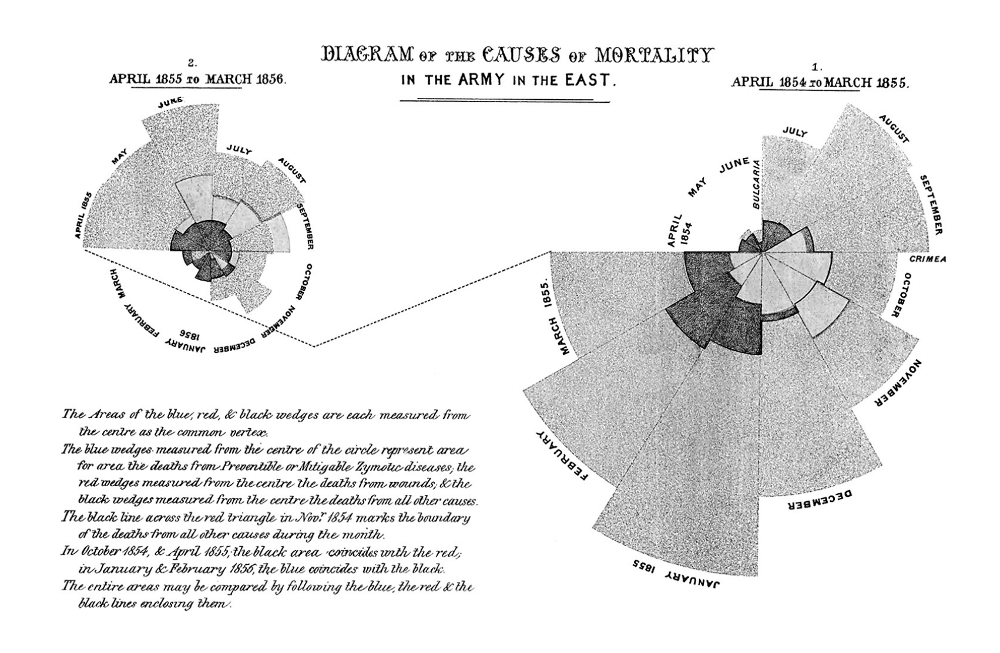
Nightingale's coxcomb: most British soldiers in Crimea died from infections (blue), not combat (red).
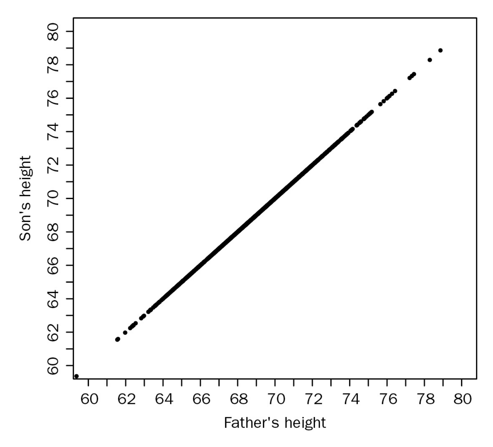
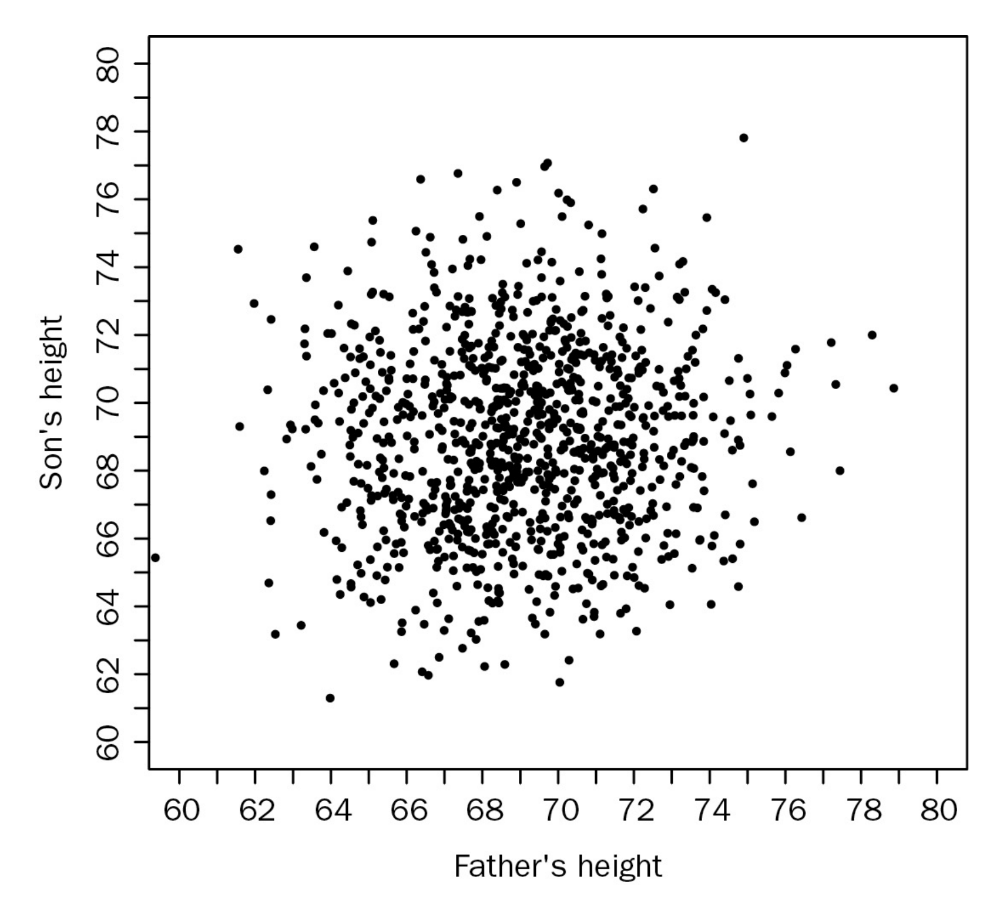
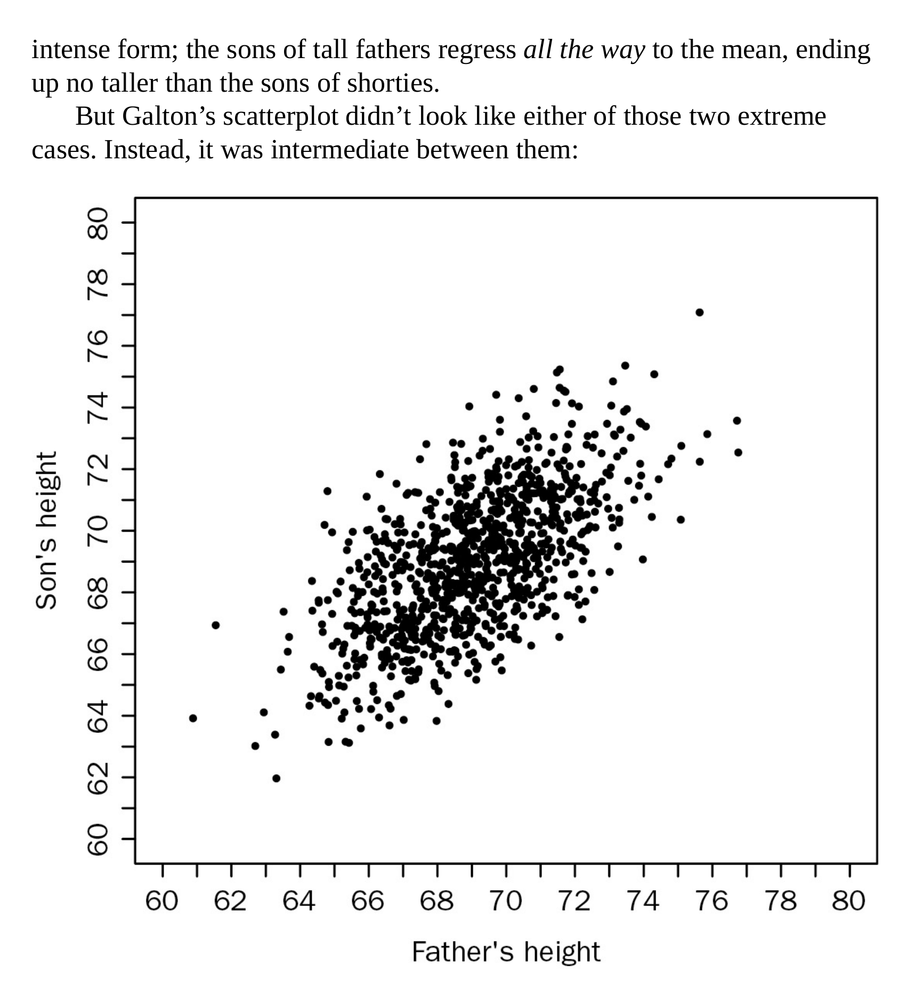
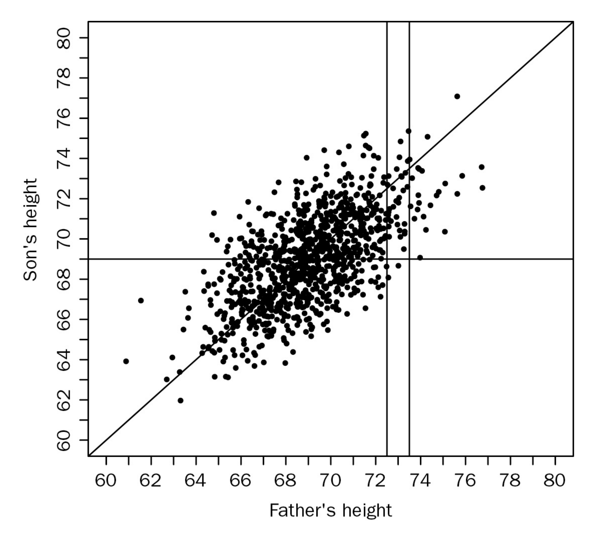
Three extremes of heredity: perfect correlation (diagonal line), zero correlation (round blob), and real data (tilted ellipse). The slice shows regression to the mean — tall fathers' sons are tall but not AS tall.
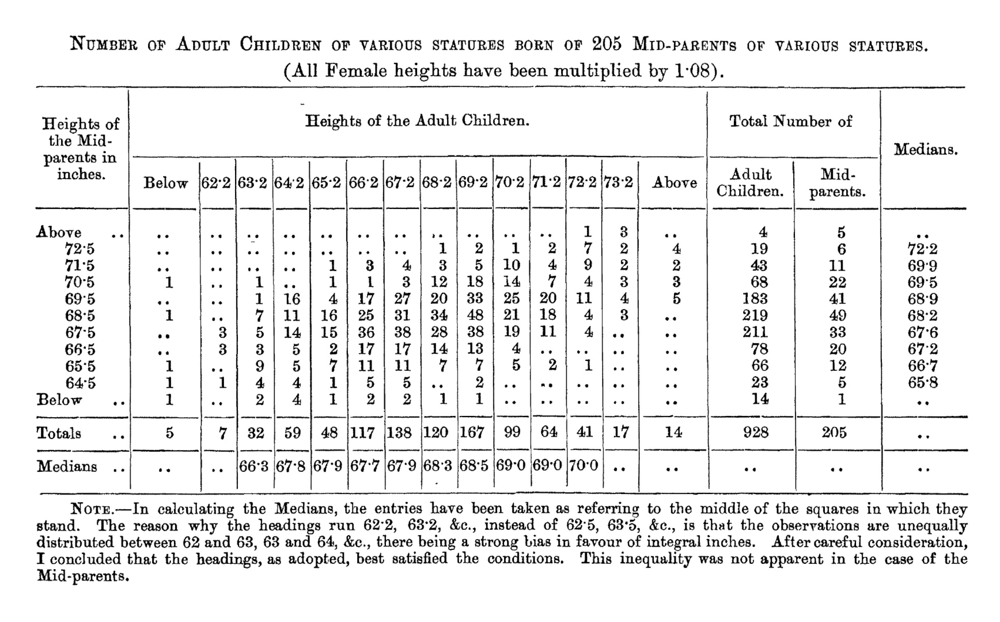
Galton's original 1886 table from "Regression Towards Mediocrity in Hereditary Stature" — the tilted elliptical shape visible in the raw numbers.
The eccentricity (skinniness) of the ellipse measures the strength of the correlation. A very skinny ellipse aligned along the diagonal means high correlation — heredity dominant, and regression to the mean is weak. A perfectly round ellipse (a circle) means zero correlation — the son's height is completely independent of the father's, and regression is total. A straight line is the most eccentric ellipse possible: perfect correlation, no regression at all. Galton called his measure correlation, drawing on the eccentricity concept from Apollonius of Perga in the third century BCE. He sent his data to mathematician J.D. Hamilton Dickson at Cambridge, disguising its origin as a physics problem to avoid bias. Dickson confirmed: not only was the ellipse what the data suggested, it was what mathematical theory demanded.
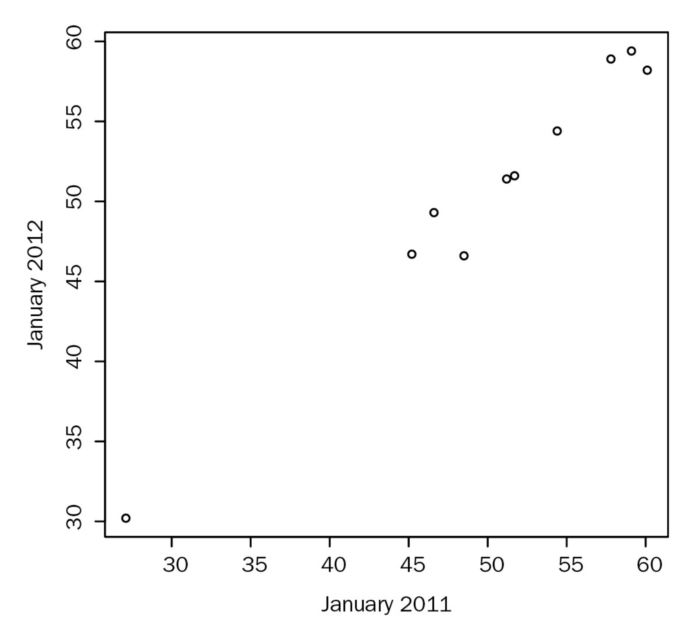
The three conic sections (quadrics): ellipse, hyperbola, parabola. Despite infinitely many quadratic equations, all reduce to these three shapes — explaining why ellipses appear in orbits, scatterplots, and mirrors.
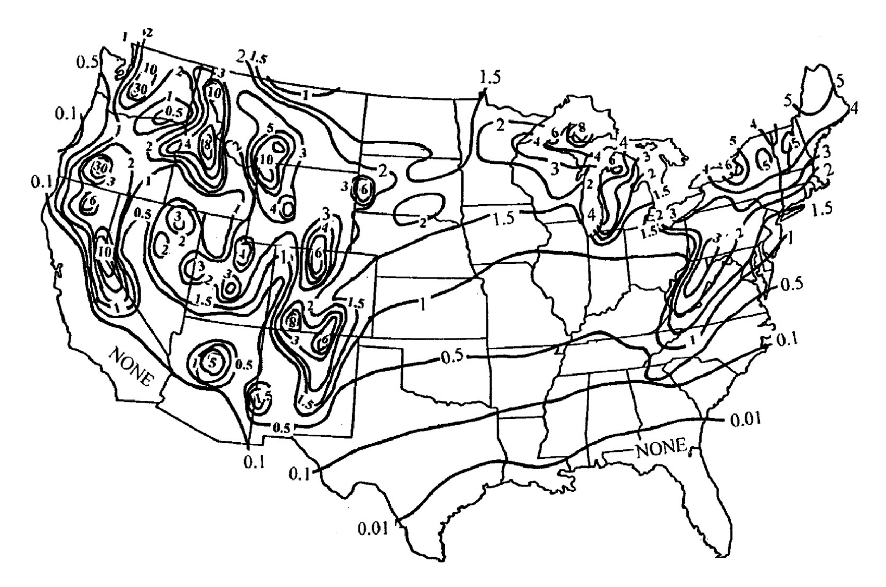
Isopleth map of average annual snowstorms across the US. Galton's isopleths on his scatterplots were ellipses — revealing the bivariate normal distribution.
Alphonse Bertillon, a French criminologist, devised a system for identifying criminals by body measurements filed on cards — head length, finger length, foot length. Adopted by the Paris Prefecture of Police in 1883, bertillonage spread worldwide. Justice Anthony Kennedy invoked it in the 2013 case Maryland v. King, comparing DNA databases to Bertillon cards. Galton asked: would more measurements always improve identification? No — because bodily measurements are correlated. Men with big hands tend to have big feet. Adding a correlated measurement provides diminishing information. Galton championed fingerprinting instead, which proved its worth when Vincenzo Peruggia stole the Mona Lisa from the Louvre in 1911 — his Bertillon card was useless, but the fingerprint on the discarded frame would have identified him immediately.
Karl Pearson generalized Galton's correlation coefficient to any pair of variables, revealing a beautiful geometric interpretation. A column of numbers is a vector — a point in high- dimensional space. Correlation between two variables is the cosine of the angle between their vectors. Cosine = 1 when the vectors point in the same direction (perfect positive correlation). Cosine = −1 when they point in opposite directions (perfect negative correlation). Cosine = 0 when the vectors are perpendicular — "orthogonal," a word creeping from mathematics into wider English. Justice Scalia encountered it during oral argument for the first time and was delighted. Ellenberg roots for its adoption: "It's been a while since a mathy word really broke out into demotic English."
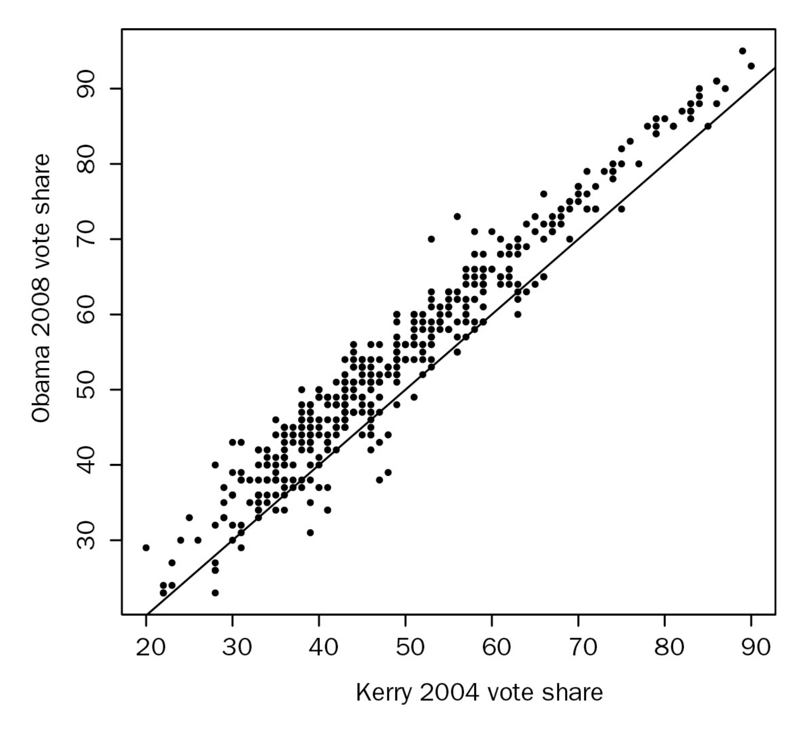
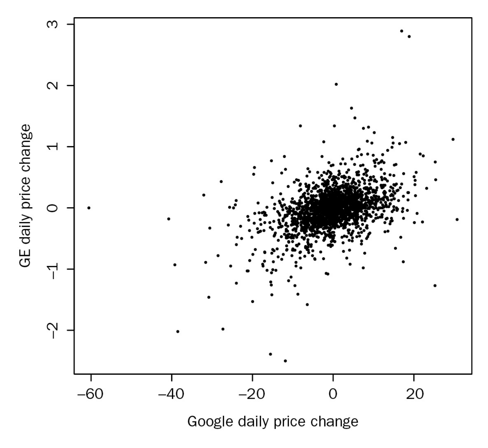
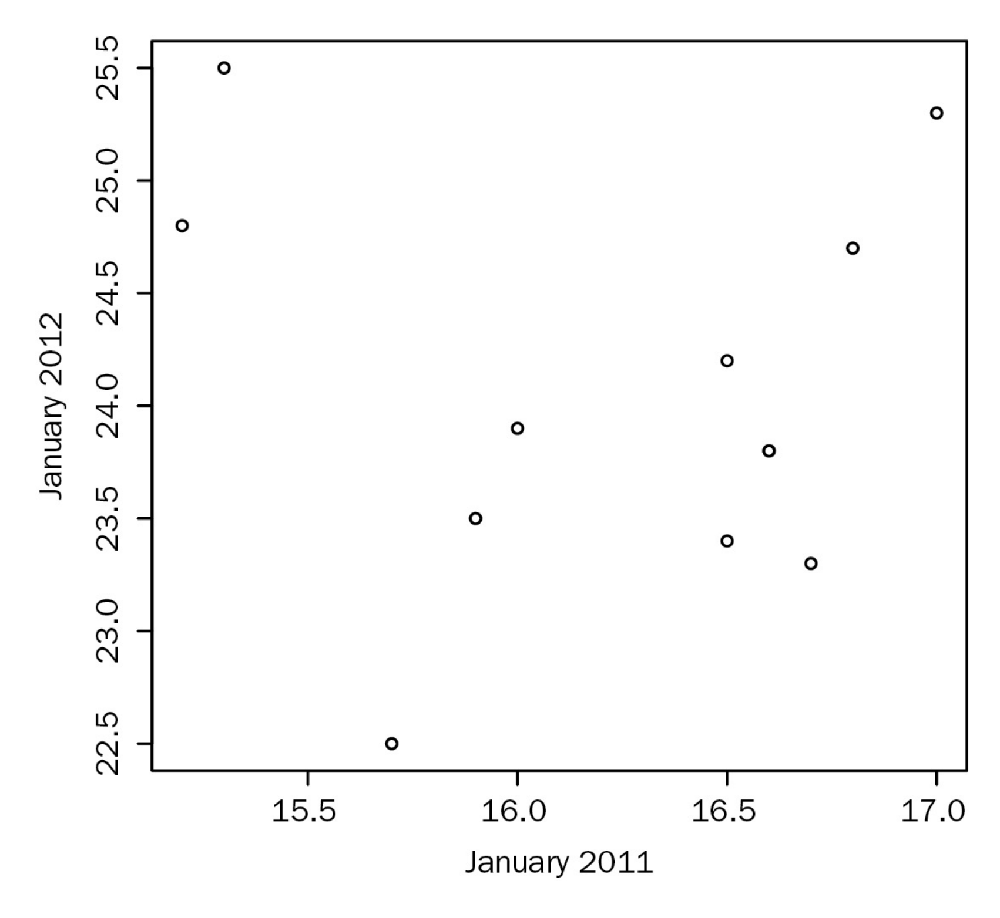
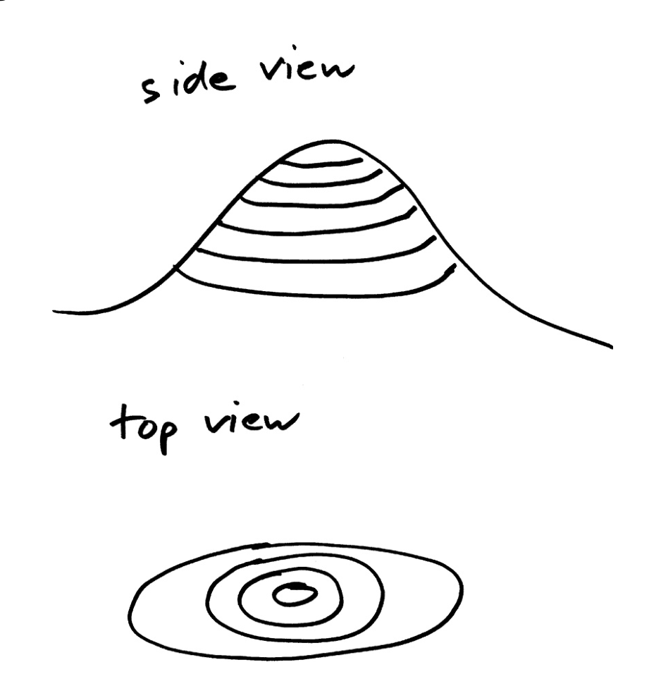
Four scatterplots illustrating different correlations: Kerry-Obama vote (skinny ellipse, high correlation), Google-GE prices (rounder, weaker), income vs. Bush vote (negative correlation), and the bivariate normal mountain viewed from side and top.
Correlation is critically not transitive. Rich states tend to vote Democratic. Rich people tend to live in rich states. But rich people still vote more Republican within most states. Andrew Gelman showed the paradox: in Texas and Wisconsin, richer counties vote more Republican; in Maryland, California, and New York, richer counties vote more Democratic — and those happen to be where political pundits live, distorting the national perception. Three vectors can be arranged so that each pair shares a rough direction but the first and third oppose each other. Geometrically obvious; intuitively shocking.
The same non-transitivity explains the failure of niacin as a heart-disease treatment. High HDL cholesterol correlates with lower heart attack risk. Niacin raises HDL. So niacin should prevent heart attacks — except correlation isn't transitive. A large National Heart, Lung, and Blood Institute trial (halted in 2011) confirmed that niacin raised HDL without reducing heart attacks or strokes. The drug boosted HDL through a mechanism unrelated to the one connecting HDL to heart health. Hormone replacement therapy had the same story: estrogen correlates with lower heart disease, but the Women's Health Initiative found HRT actually increased risk. "In the real world, it's next to impossible to predict what effect a drug will have on a disease, even if you know a lot about how it affects biomarkers."
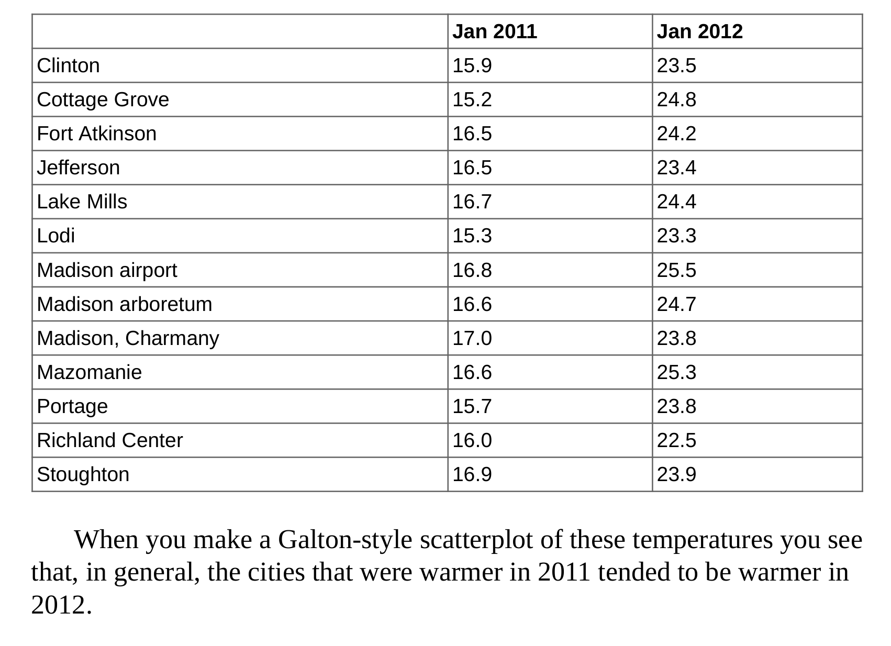
January temperatures at 13 southern Wisconsin stations. The warmest in 2011 regressed toward the middle by 2012, and so did the coldest.
Thirteen weather stations in southern Wisconsin, all within an hour's drive, illustrate signal versus noise. The warmest in January 2011 regressed toward the middle by January 2012, and so did the coldest. Classic regression. But ten California cities spread widely apart showed almost no regression (Pearson r = 0.989): the cold places (Truckee in the Sierra Nevada) stayed cold, the hot places (San Diego, LA) stayed hot. The difference is signal versus noise. California cities have huge inherent temperature differences (signal) that swamp year-to-year fluctuations (noise) — skinny ellipse, little regression. Wisconsin stations are climatically similar (small signal), so year-to-year chance dominates (big noise) — rounder ellipse, strong regression. What Secrist's weather data really shows is that businesses are more like Wisconsin cities than California cities: management skill matters, but luck matters roughly as much.
Galton coined "eugenics" and was its most prominent advocate, believing in preventing "the free propagation of the stock of those who are seriously afflicted by lunacy, feeble-mindedness, habitual criminality, and pauperism." Ellenberg reflects: "Mathematics is a way not to be wrong, but it isn't a way not to be wrong about everything. Wrongness is like original sin; we are born to it and it remains always with us, and constant vigilance is necessary." Mathematical skill can breed a dangerous overconfidence that extends to areas where the math gives no guidance. "We become like those pious people who, over time, accumulate a sense of their own virtuousness so powerful as to make them believe the bad things they do are virtuous too."
At the turn of the twentieth century, lung cancer was vanishingly rare. By 1947, it accounted for nearly a fifth of cancer deaths among British men — a fifteenfold increase in a few decades that was too large to explain by improved diagnosis alone. Possible causes included factory smoke, car exhaust, and unknown pollutants, but cigarettes — whose popularity had exploded during the same period — were the prime suspect. Richard Doll and A. Bradford Hill (1950) studied 649 male lung cancer patients in 20 London hospitals and found that only TWO were nonsmokers. A control group of 649 men hospitalized for other complaints had 27 nonsmokers. Heavier smokers had even higher risk: 168 of the cancer patients smoked 25 or more cigarettes daily, versus only 84 of the controls.
The correlation was overwhelming, but Doll and Hill themselves acknowledged its limitations: "The association would occur if carcinoma of the lung caused people to smoke or if both attributes were end-effects of a common cause." The idea that tumors might cause smoking seems absurd — tumors can't reach backward in time — but the common cause alternative is not absurd at all. R.A. Fisher, founding hero of modern statistics and holder of the Galton Chair of Eugenics at University College London, proposed the "constitutional hypothesis": perhaps a genetic factor predisposed people both to lung cancer and to the desire to smoke. The pre- cancerous state involves chronic inflammation, which might drive sufferers to seek the comfort of cigarettes. "To take the poor chap's cigarettes away from him would be rather like taking away his white stick from a blind man."
Fisher was both a rigorous statistician demanding that every alternative be examined and a lifelong pipe smoker with deep personal affection for tobacco. Some historians have noted his consultancy work for the Tobacco Manufacturer's Standing Committee, though the extent of its influence on his views is debated. He proposed twin studies: if identical twins match on smoking behavior more than fraternal twins (who share upbringing equally), that would suggest smoking has a heritable component. Small- scale results supported this, and modern research confirms that the urge to smoke does have genetic components. But that doesn't mean those same genes cause lung cancer. Epidemiologist Jan Vandenbroucke: "I found extremely well-written and cogent papers that might have become textbook classics for their impeccable logic and clear exposition of data and argument if only the authors had been on the right side."
By the 1950s, consensus slowly built. Surgeon General Leroy Burney declared smoking the "principal factor" in lung cancer in 1959. In 1964, Surgeon General Luther Terry's blue-ribbon commission concluded that smoking caused lung cancer, citing converging evidence: consistent association across many studies, a dose-response relationship (more smoking meant more cancer), cancer appearing at the point of contact (cigarettes caused lung cancer, pipes caused lip cancer), and ex-smokers having lower rates than those who continued. No single piece of evidence was conclusive; together they were overwhelming.
If you never give advice until you're sure it's right, you're not giving enough advice. Jordan Ellenberg
Jerry Cornfield called the randomized experiment that would definitively establish causation "possible to conceive but impossible to conduct" — you would have to force randomly selected teenagers to smoke for fifty years. So policy must be made on correlational evidence, with all its ambiguity. The eggplant thought experiment: suppose studies show a 75% probability that eggplant causes heart failure. The expected value of recommending against eggplant: 75% times 1,000 lives saved plus 25% times 200 lives lost from worse diets = 700 net lives saved per year. Positive expected value, so make the recommendation even though it might be wrong. "Refraining from making recommendations at all, on the grounds that they might be wrong, is a losing strategy. It's a lot like George Stigler's advice about missing planes. If you never give advice until you're sure it's right, you're not giving enough advice."
Berkson's fallacy shows how correlations can arise not from a common cause but from a common effect. In a town of 1,000 people, 30% have high blood pressure and 40% have diabetes, independently. In the general population, the rate of high blood pressure is the same whether or not you have diabetes (30%). But the hospital population consists only of sick people — and the non-diabetics in the hospital are there because of their blood pressure, creating a spurious correlation between the two conditions that doesn't exist in the general population. Joseph Berkson, the same Mayo Clinic statistician who mocked the NHST with his albino paradox, identified this phenomenon in 1938.
The "handsome jerk" problem is Berkson's fallacy applied to dating. Niceness and handsomeness are independent in the general population — the "Great Square of Men" has both axes distributed uniformly. But niceness and handsomeness both serve as tickets to your dating pool (the "Acceptable Triangle"). Mean ugly men are invisible — you never meet them. Within the triangle, the handsomest men run the full gamut of personality, but the nicest men are only averagely handsome (the ugly nice guys barely squeezed in). The negative correlation between looks and personality is real in your experience but a pure artifact of selection. Literary snobbery works the same way: popular novels seem terrible because the only novels you hear about are either popular OR good. "The Great Square is too simple, of course. There are many dimensions. The Great Square is better described as a kind of Great Hypercube."
The chapter's deepest lesson applies well beyond medicine. Berkson himself was a vigorous skeptic of the tobacco-cancer link, arguing from a mirror-image of the hospital fallacy: the 85-95% of the population who smoked at midcentury were normal, while the small minority of nonsmokers were "a hardy lot" who could resist enormous social pressure and advertising. Such hardy types would naturally have lower death rates from everything, not just cancer. The constitutional hypothesis never gained traction, but Berkson's deeper point — that selection effects can manufacture correlations indistinguishable from real ones — remains one of the most important cautions in all of epidemiology. Whenever you observe a pattern in a selected sample, the first question should always be: would this pattern exist in the unselected population, or did the act of selection create it?
In January 2011, CBS News polling found that 77% of Americans said cutting spending was the best way to handle the deficit, with only 9% preferring tax increases. Americans consistently say they want small government and spending cuts. But a Pew Research poll one month later asked about 13 specific categories of government spending, and in 11 of them more people wanted to increase spending than decrease it. Only foreign aid and unemployment insurance — under 5% of the budget combined — drew majority support for cuts. The average American, as Ellenberg puts it, is "eager to slash foreign aid, occasionally tolerant of cuts to welfare or defense, and pretty gung ho for increased spending on every single other program our taxes fund." Bryan Caplan: "The most plausible reading of this data is that the public wants a free lunch." Paul Krugman: "People want spending cut, but are opposed to cuts in anything except foreign aid."
The paradox is not that Americans are stupid or hypocritical. A simple word problem reveals the structure: suppose 1/3 of voters want to raise taxes, 1/3 want to cut defense, and 1/3 want to cut Medicare. "Should we cut spending?" — 2/3 say yes (67-33 margin). "Should we cut defense?" — 2/3 say no (the tax raisers and the Medicare cutters oppose it). "Should we cut Medicare?" — 2/3 say no (the tax raisers and the defense cutters oppose it). The country wants to cut spending but opposes cutting any specific program. Each individual voter has a perfectly rational, coherent political stance. In the aggregate, their positions are nonsensical. The "infantile average American" who demands everything and nothing simultaneously does not exist. What exists is a population with diverse, coherent preferences that aggregate into incoherence.
The ACA illustrates perfectly. In October 2010, 52% opposed Obamacare. But the breakdown: 37% wanted outright repeal, 10% wanted it weakened, 15% wanted to keep it as-is, and 36% wanted to expand it. Three options — leave it, kill it, make it stronger — and each one was opposed by a majority. Fox News accurately reported that a majority opposed Obamacare. MSNBC accurately reported that a majority wanted to preserve or strengthen it. Both were cherry-picking from the same incoherent aggregate.
Florida 2000 makes the problem concrete: Bush 48.85%, Gore 48.84%, Nader 1.6%. Virtually every Nader voter preferred Gore to Bush, so a solid 51% majority preferred Gore to Bush in a head-to-head matchup — but Nader's presence as an "irrelevant alternative" gave the election to Bush. Even slime molds fall for this: the single-celled organism Physarum polycephalum splits evenly between two food options (3g dark oats vs. 5g lit oats), but adding a clearly inferior third option (1g dark oats) changes the ratio three-to-one in favor of the 3g option. The "asymmetric domination effect" affects jays, honeybees, hummingbirds, and humans too. Experiment at Sedikides, Ariely, and Olsen: undergraduate women choosing hypothetical dates split 50-50 between two equally attractive options, but introducing a slightly inferior version of one man sent 2/3 of women to his near-twin. "If you're a single guy looking for love... choose the wingman who's pretty much exactly like you — only slightly less desirable."
The Borda count (rank all candidates, assign points: 2 for first, 1 for second, 0 for third) would have elected Gore in Florida. But even the Borda count is vulnerable to spoilers — a third candidate can still flip the winner by redistributing points. Instant-runoff voting (IRV) eliminates the last-place candidate and redistributes their ballots. Burlington, Vermont tried it in 2009: Kurt Wright (R) led first-place votes, Andy Montroll (D) was everyone's second choice, and Bob Kiss (Progressive) won under IRV. But head-to-head, Montroll beat Kiss AND Montroll beat Wright. The centrist everyone liked was eliminated first. Worse: if 795 voters had switched to Kiss (from Wright), Kiss would have been eliminated instead and Montroll would have won. "We gave Kiss more votes — and instead of winning, he lost!" Traditional method: Wright. IRV: Kiss. Head-to-head: Montroll. Three methods, three winners.
These are Condorcet paradoxes, discovered by the Marquis de Condorcet (Marie-Jean-Antoine-Nicolas de Caritat) in the late eighteenth century. "Le mouton enragé" (the rabid sheep) — shy, quiet, quick-tempered — believed in "social mathematics": that the social world could be analyzed by equations as surely as the physical one. His jury theorem (1785) proved that if each juror has better-than-random accuracy, a large enough jury converges on the truth. He was Thomas Jefferson 's intellectual kindred spirit. John Adams dismissed him as "a quack" and "mathematical charlatan." Condorcet insisted — almost alone among Enlightenment thinkers — that the Rights of Man belonged to women too. Forced into hiding during the Terror, knowing he might not survive, he wrote his astonishingly optimistic Sketch for a Historical Picture of the Progress of the Human Mind, predicting a world free of royalism, prejudice, hunger, and old age. Captured in March 1794 (Germinal of Year 2), dead two days later.
Kenneth Arrow's impossibility theorem (1951 PhD thesis, eventual Nobel Prize in 1972) proved that even a much weaker set of axioms than Condorcet's leads to paradoxes in any voting system. It would have disappointed Condorcet as deeply as Gödel's incompleteness theorems disappointed Hilbert. Condorcet never found his perfect system. He wrote forlornly in 1785 that one must accept "equivocal" decisions and hope for enlightened voters. Yet his fundamental conviction — that quantitative "social mathematics" ought to guide government — has triumphed completely. "Condorcet's idea is so thoroughly intertwined with the modern way of doing political business that we hardly see it as a choice. But it is a choice. I think it's the right one."
Condorcet and Voltaire had an unlikely friendship. The young Condorcet visited the aging Voltaire at Ferney in 1770, and Voltaire adopted him as a protégé. Friction arose when Condorcet praised Pascal — Voltaire found Pascal's religious mathematics "not only wrong but dangerous." Condorcet split the difference: Pascal's mathematical lens on human behavior combined with Voltaire's faith in reason and secularism. That synthesis — rigorous quantitative thinking applied to social questions, but in service of Enlightenment values rather than religious ones — became Condorcet's life project and, arguably, the intellectual foundation of modern social science. That he died for it, betrayed by the Revolution he had helped create, only underscores how deeply he meant it.
For two thousand years, mathematicians tried to prove Euclid's fifth axiom — the parallel postulate ("there is exactly one line through P parallel to L") — from the first four. The fifth felt inelegant, more complicated than the others, "like a stain in the corner of the floor." Farkas Bolyai, a Hungarian nobleman, wasted years on the problem and begged his son János not to follow: "You must not attempt this approach to parallels. I know this way to the very end. I have traversed this bottomless night, which extinguished all light and joy in my life."
János ignored his father. By 1823 he had the answer: what if the parallel postulate were false? No contradiction follows. There is another geometry — now called hyperbolic geometry — where the first four axioms hold but the fifth does not, where through any external point pass infinitely many parallel lines. "Out of nothing I have created a strange new universe." Simultaneously, Nikolai Lobachevskii reached the same conclusion in Russia. Gauss had formulated similar ideas privately but never published; told of Bolyai's work, he said: "To praise it would amount to praising myself." Riemann observed an even simpler non-Euclidean geometry: the sphere, where lines are great circles and there are NO parallel lines at all (every pair of great circles intersects). If the fifth axiom could be derived from the first four, the sphere would harbor a contradiction. But spheres exist and satisfy the first four axioms perfectly. So the fifth axiom is independent. QED.
The practical consequence is formalism: ask not what mathematical objects "are" but what the axioms define them to be. A point can be a frog, a kumquat — doesn't matter. Any theorem proved from the first four axioms alone is automatically true on spheres, planes, and hyperbolic spaces alike. This is a "mathematical force multiplier": prove once, apply everywhere. Post-Einstein, non-Euclidean geometry is not just a game but the actual geometry of spacetime. Olivia Caramello's work on Grothendieck toposes extends this principle: theories in different mathematical fields "classified by the same topos" let you transport theorems between areas that appear completely unrelated.
Justice Scalia was the fiercest advocate of legal formalism: "Long live formalism. It is what makes a government a government of laws and not of men." Stick to the words of the Constitution and statutes, treat them as axioms, and derive judgments by logical deduction. The ball-and-strike analogy comes from Chief Justice Roberts: "Judges are like umpires." And Bill Klem, "the Old Arbitrator" of baseball umpiring, stated the formalist position more bluntly than any philosopher: "It ain't nothin' till I call it." In 1996, twelve-year-old Jeffrey Maier reached over the wall and pulled in Derek Jeter's fly ball. Not a home run. But umpire Rich Garcia called it one. "Jeter knew it wasn't a home run. Tarasco and Benitez knew. Fifty-six thousand Yankee fans knew. But baseball is formalist — it's a homer because the umpire says so."
A scientist can hardly encounter anything more undesirable than, just as a work is completed, to have its foundation give way. Gottlob Frege
David Hilbert, formalism's greatest champion, dreamed of rebuilding all of mathematics from bedrock axioms and proving the entire edifice consistent using finitary methods. His 23 problems, presented at the 1900 International Congress, set the course for twentieth- century mathematics. (His reputation was so vast that his taste for sandals with socks is allegedly why mathematicians wear them today.) Then Bertrand Russell wrote to Gottlob Frege with a paradox: consider the set of all sets that do not contain themselves. Does it contain itself? If yes, then by definition it shouldn't. If no, then by definition it should. Frege's second volume of Grundgesetze was already in press; his postscript recording the disaster is "perhaps the saddest sentence ever written in a technical work of mathematics." In 1931, Gödel's second incompleteness theorem proved no finitary proof of arithmetic's consistency could exist, killing Hilbert's program with a single stroke.
The cult of genius surrounding figures like Srinivasa Ramanujan — the prodigy from southern India who produced over 4,000 theorems in notebooks, claimed to receive revelations from the goddess Namagiri, and worked in near-total isolation — is romantic but misleading. Ramanujan is famous precisely because he is so uncharacteristic of how mathematics actually works. Hilbert himself was a good but not exceptional student — that distinction belonged to Hermann Minkowski, two years younger. The cult damages math education: students quit because someone in class is "ahead" of them. "I've never heard a student say, 'I like Hamlet, but I don't really belong in AP English — that kid who sits in the front row knows all the plays.'" What mathematics needs is "more math majors who DON'T become mathematicians — more math major high school teachers, more math major CEOs, more math major senators."
Terry Tao: "The popular image of the lone (and possibly slightly mad) genius... is a charming and romantic image, but also a wildly inaccurate one." There is ALWAYS someone ahead of you. Fields Medalists look to the dead greats. "And yet, in the last hundred years, the joined effort of all these dummies-compared-to-Gauss has produced the greatest flowering of mathematical knowledge the world has ever seen." Mark Twain: "It takes a thousand men to invent a telegraph... and the last man gets the credit and we forget the others." Mathematics is communal, like football where a touchdown pass requires the whole offensive line. Genius is not a kind of person. "Genius is a thing that happens, not a kind of person."
Gödel's citizenship exam story captures the formalist temperament perfectly. Preparing for the hearing in 1948, he found what he believed was a logical contradiction in the Constitution that could permit a dictatorship. Einstein and Morgenstern begged him not to mention it. The examiner asked about Austria's government; Gödel explained it had been a republic whose constitution allowed transformation into dictatorship. "This could not happen here," the examiner reassured him. "Oh, yes, I can prove it," Gödel replied. The examiner hurriedly changed the subject and granted citizenship. Nobody knows which constitutional flaw Gödel identified, but the episode captures something essential about mathematical thinking: the compulsion to follow a logical chain wherever it leads, even when the destination is socially awkward, politically inconvenient, or existentially terrifying.
Between his sophomore and junior years, Ellenberg modeled tuberculosis prevalence through 2050 for a public health researcher. He built a simulation using empirical data on transmission rates, infection courses, and medication compliance, broken down by age, race, sex, and HIV status. Each empirical input had small uncertainties — maybe the transmission rate was 20%, maybe 13%, maybe 25%. These local uncertainties percolated through the simulation, feeding back into each other, until by 2050 "the noise had engulfed the signal." The model could produce anything from zero tuberculosis to universal infection. "I had no principled way to choose."
The researcher didn't want to hear that the model was useless. He was paying for a number. "I know there's uncertainty, that's how medical research is, I get that, just give me your best guess." Ellenberg protested that any single guess would be worse than no guess at all, but eventually gave in and produced a number. "I have no doubt he told many people, afterward, that X million people were going to have tuberculosis in the year 2050. And I'll bet if anyone asked him how he knew this, he would say, I hired a guy who did the math."
Theodore Roosevelt's famous "Citizenship in a Republic" speech (delivered at the Sorbonne in 1910, where Hilbert had presented his 23 problems ten years earlier) declares: "It is not the critic who counts; not the man who points out how the strong man stumbles... The credit belongs to the man who is actually in the arena." But Ellenberg offers a counterexample: when Roosevelt dismisses the "closet philosopher" as "of no use in actual governmental work," he forgets Condorcet, who spent his time in the library and contributed more to the French state than most of his era's practical men. And Abraham Wald "went his whole life without lifting a weapon in anger, but who nonetheless played a serious part in the American war effort, precisely by counseling the doers of deeds how to do them better. He was unsweaty, undusty, and unbloody, but he was right. He was a critic who counted."
Against Roosevelt's brash certainty, Ellenberg places John Ashbery's poem "Soonest Mended," which he calls "the greatest summation I know of the way uncertainty and revelation can mingle, without dissolving together, in the human mind": "For this is action, this not being sure, this careless / Preparing, sowing the seeds crooked in the furrow, / Making ready to forget, and always coming back / To the mooring of starting out, that day so long ago." Roosevelt would have called "not being sure" cowardly. The Housemartins — "the greatest Marxist pop band ever to pick up guitars" — took Roosevelt's side in their 1986 song "Sitting on a Fence." Ashbery says fence-sitting is not weakness but action: "a kind of fence-sitting / Raised to the level of an esthetic ideal."
Mathematics gives us a way of being unsure in a principled way: "I'm not sure, this is why I'm not sure, and this is roughly how not-sure I am." Or even more: "I'm unsure, and you should be too." The paladin of this approach is Nate Silver, "a kind of Kurt Cobain of probability." His 2012 New York Times columns drew unprecedented public attention to probability theory. Traditional pundits said "Obama will win" or "Romney will win." Silver said: "Either one might win, but Obama is substantially more likely to win." Josh Jordan in the National Review criticized Silver for reducing Obama's probability without declaring the race fundamentally transformed. Dylan Byers in Politico complained Silver "often gives the impression of hedging." "What Silver offers isn't hedging; it's honesty." When the weather forecast says 40% chance of rain and it rains, you don't lose faith in meteorology.
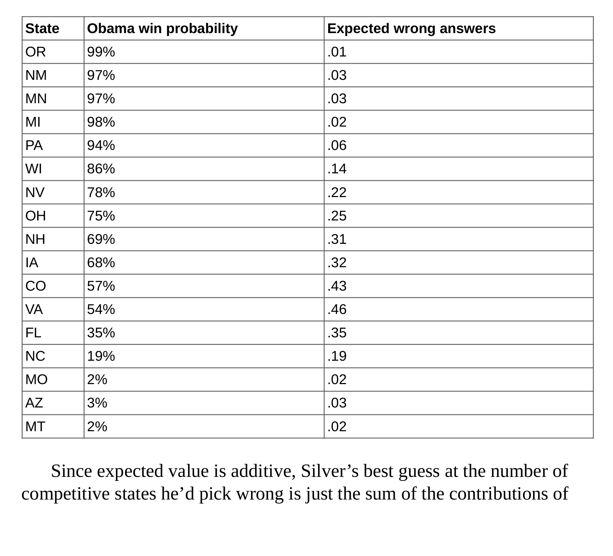
Silver's competitive states on October 26, 2012. Each state's expected wrong answers sum to 2.83 — he expected about 3 wrong. He got all fifty right.
Silver's expected number of wrong state calls on October 26: summing across 18 competitive states, the expected wrong answers totaled 2.83. He expected to get about three states wrong. He got all fifty right. W.O.V. Quine: "A reasonable person believes each of his beliefs to be true; yet experience has taught him to expect that some of his beliefs, he knows not which, will turn out to be false." This parallels the budget paradox from Chapter 17 perfectly — Americans think each government program is worth funding but not ALL programs. Silver presented probability distributions, not point predictions. "Silver was being uncertain, rigorously uncertain, in public, and the public ate it up. I wouldn't have thought it was possible. This is action, this not being sure!"
Common mathematical folk advice: prove by day, disprove by night. Topologist R.H. Bing allegedly split each month between two weeks trying to prove the Poincaré Conjecture and two weeks trying to find a counterexample. The value of the night shift: each failed attempt to disprove a theorem hits a wall, and those walls accumulate into a structure — the structure of the proof itself. Bolyai tried to prove the parallel postulate from the other axioms. He failed, like everyone else. But unlike the others, he understood what was blocking him: the existence of a geometry without the parallel postulate. Each failure taught him more about the thing he didn't think existed, "getting to know it more and more intimately, until the moment when he realized it was really there."
F. Scott Fitzgerald: "The test of a first- rate intelligence is the ability to hold two opposed ideas in the mind at the same time, and still retain the ability to function." Mathematicians do this constantly in reductio ad absurdum — "lucid dreaming of a very systematic kind." Samuel Beckett's Worstward Ho sums up the value of failure more succinctly than any professor: "Ever tried. Ever failed. No matter. Try again. Fail again. Fail better." David Foster Wallace put a tamed version of Russell's paradox at the center of The Broom of the System. He "wrestled with the paradoxes just the way mathematicians do."
To do mathematics is to be, at once, touched by fire and bound by reason. This is no contradiction. Logic forms a narrow channel through which intuition flows with vastly augmented force. Jordan Ellenberg
The mathematicians encountered in this book were not just puncturers of unjustified certainties, not just critics who count. They found things and they built things. Galton uncovered regression to the mean; Condorcet built a new paradigm for social decision making; Bolyai created an entirely novel geometry; Shannon and Hamming made a space where digital signals lived instead of circles and triangles; Wald got the armor on the right part of the plane. "Every mathematician creates new things, some big, some small. All mathematical writing is creative writing." Mathematical understanding — "suddenly knowing what's going on, with total certainty, all the way to the bottom" — is a sensation attainable in few other places in life. "You feel you've reached into the universe's guts and put your hand on the wire."
The lessons of mathematics are simple and there are no numbers in them. There is structure in the world; we can hope to understand some of it; our intuition is stronger with a formal exoskeleton than without one. Mathematical certainty is one thing, and the softer convictions we find attached to us in everyday life are another, and we should keep track of the difference if we can. "When are you going to use this? You've been using mathematics since you were born and you'll probably never stop. Use it well."
Wald's bullet-hole insight applies directly to evaluating investment performance. Morningstar's Large Blend funds returned 178% average from 1995 to 2004, but only counting funds that survived the full ten years. Including dead funds drops the average to 134%. The Baltimore Stockbroker parable explains mutual fund incubation perfectly: companies launch many funds privately, publicize only the winners, and mercy-kill the rest. Surviving incubated funds don't maintain their prenatal outperformance. Any time you evaluate a track record, the essential question is: how many chances did the manager have to produce that record, and how many failures are hidden in the file drawer?
Last year's best-performing fund is like the first-half home run leader — a combination of genuine skill and transient luck, where only the skill component persists into the next period. Running backs who sign big contracts after a great season record fewer yards per carry the next year. Second albums by breakout bands disappoint. The same arithmetic governs stock-picking contests, hedge fund of the year awards, and any ranking based on a single period's performance. Chasing last year's winners is the investment equivalent of believing the Home Run Derby Curse is real.
A positive-expected-value trade that can wipe you out is worse than a lower-EV trade with manageable variance. "Picking up pennies in front of a steamroller" describes every blowup in leveraged finance history. Cash WinFall's cartels understood this: they hand-picked combinatorially optimal tickets to guarantee minimum payoffs, reducing variance while preserving expected value. Portfolio diversification serves exactly the same mathematical function — it is the Fano plane applied to your retirement account.
A biomarker correlates with health. A drug raises the biomarker. But the drug may not improve health, because correlation is not transitive. The niacin-HDL failure is the medical version of a common investing mistake: momentum correlates with returns, a new ETF correlates with momentum, but the mechanism by which the ETF captures momentum matters as much as the correlation itself. Surrogate endpoints are as dangerous in factor investing as they are in clinical trials.
"Everyone will be overweight by 2048" is the epidemiological version of "this company will grow earnings at 15% forever." Nonlinearity is the rule, not the exception: growth rates decelerate, margins compress, competitive advantages erode. The question is not whether a trend will curve but when and how sharply. Mark Twain's Mississippi satire should be required reading for anyone building a discounted cash flow model.
Nate Silver's approach — stating probabilities rather than predictions, presenting distributions rather than point estimates — is exactly what good risk management requires. A trade thesis with 65% conviction is not hedging; it's honesty about the state of your knowledge. Sizing positions proportional to your actual confidence, rather than treating every thesis as a certainty, is the mathematical way not to be wrong. "If gambling is exciting, you're doing it wrong" applies equally to speculation.
Not a set of arbitrary rules but common sense formalized and sharpened until it can reach places intuition alone cannot. Without rigor, the officers armor the wrong parts of the plane. Without common sense, math is sterile computation that produces answers nobody checks against reality.
Linear extrapolation is the default mode of human reasoning and the source of most analytical errors — from the Laffer curve to obesity projections to baseball pace statistics to Mark Twain's Mississippi. Straight locally, curved globally. The question is always where the bend comes.
A p-value below 0.05 does not mean the result is real. It means the result would be unlikely if the null hypothesis were true. With enough tests, enough wiggle room, or enough data, anything becomes significant. The dead salmon, the green jelly beans, and the Bible Code all passed standard significance tests.
Not biology, not competition, not creative exhaustion. Whenever two variables are correlated but not perfectly, extreme values in one correspond to less extreme values in the other. Secrist's businesses, Scared Straight kids, first-half home run leaders, and bran-treated patients all regress — inevitably, mathematically, without exception.
Every educated person knows correlation doesn't prove causation. Fewer know that correlation isn't transitive: A correlates with B, B correlates with C, but A and C may be unrelated. Niacin raises HDL but doesn't prevent heart attacks. Rich states vote Democratic but rich people vote Republican. Three vectors can each share a rough direction pairwise while the first and third point away from each other.
Arrow's impossibility theorem proves it. Condorcet's paradox demonstrates it. Burlington's three-winner election illustrates it. Every method of aggregating individual preferences into collective will involves trade-offs. Recognizing this is not cynicism but mathematical maturity.
"I'm not sure, this is why I'm not sure, and this is roughly how not-sure I am." Principled uncertainty — quantifying what you don't know — is more honest, more useful, and more powerful than false certainty. It is, as Ashbery wrote, a form of action. Nate Silver proved the public could handle it. The rest of us should try.
Fisher never intended p = 0.05 as a rigid cutoff. The threshold has become a gatekeeper that rewards p-hacking, punishes honest uncertainty, fills journals with "statistically significant" but practically meaningless results, and allows dead fish to achieve significance in fMRI scanners. The field should have named it "statistically noticeable" rather than "statistically significant."
When the margin is smaller than the noise — spoiled ballots, broken machines, confusing ballot designs — the "winner" is already determined by chance. A coin flip would at least be transparent about the randomness. Charles Seife proposed this seriously, and Ellenberg finds the logic compelling even if the politics are impossible.
Ellenberg's TB model: each additional empirical input introduced its own uncertainty, and these uncertainties compounded through feedback loops until the model could produce any outcome at all. In chaotic systems and complex social phenomena, more variables can amplify noise faster than they sharpen signal.
If there's a 75% chance eggplant causes heart failure, recommending against it saves an expected 700 lives per year even when the recommendation turns out to be wrong 25% of the time. Never giving advice until you're certain means never giving enough advice. This is Stigler's airport principle applied to public health.
The cult of the lone genius — Ramanujan, Nash, Galois — is romantic but wildly inaccurate. The greatest mathematical flowering in history came from the collective efforts of many people, none of whom were Gauss. "It takes a thousand men to invent a telegraph, and the last man gets the credit." Genius is a thing that happens to communities, not a trait that belongs to individuals.
Math is like an atomic-powered prosthesis that you attach to your common sense, vastly multiplying its reach and strength. Jordan Ellenberg
The significance test is the detective, not the judge. Jordan Ellenberg, paraphrasing R.A. Fisher
I've been in a thousand arguments over this topic. I've won them all, and I've convinced no one. Amos Tversky, on the hot hand
Ever tried. Ever failed. No matter. Try again. Fail again. Fail better. Samuel Beckett, Worstward Ho
You feel you've reached into the universe's guts and put your hand on the wire. Jordan Ellenberg, on mathematical understanding
| Reference | Concept Illustrated |
|---|---|
| Abraham Wald's bullet holes | Survivorship bias — the missing data is the important data |
| The Baltimore Stockbroker | Multiple testing produces impressive results from pure noise |
| Laffer's napkin | Nonlinearity — the relationship between variables need not be a straight line |
| Mark Twain's Mississippi | False linear extrapolation carried to satirical absurdity |
| The dead salmon fMRI | Multiple comparisons — thousands of tests guarantee false positives |
| Scared Straight | Regression to the mean mistaken for treatment effect |
| The Bible Code | Researcher degrees of freedom — with enough wiggle room, any text yields miracles |
| Voltaire's lottery cartel | Positive expected value exploited by those who actually do the math |
| Bolyai's strange universe | Independence of axioms — denying what seems obvious can create rather than destroy |
| Nate Silver as Kurt Cobain | Principled uncertainty brought from niche practice to mass audience |
| Slime mold choosing oats | Independence of irrelevant alternatives — even brainless organisms fall for decoys |
| Berkson's handsome jerks | Selection on a common effect creates spurious correlations within the selected pool |
| Frege's postscript | Russell's paradox — a single contradiction can destroy an entire foundation |
| Parsons code (Beethoven) | Information compression — exponentially powerful discrimination from short codes |
| Ashbery's "Soonest Mended" | "This not being sure" as action, not weakness — the mathematical stance toward uncertainty |
Simple/Shallow (1+2=3), Complicated/Shallow (ten-digit multiplication), Complicated/Profound (Riemann Hypothesis), and Simple/Profound — where this book lives. Ideas accessible with basic math whose applications are limitless.
The logical structure of null hypothesis significance testing: assume the null, show the data is very improbable under that assumption, reject. Sound but leaky — "impossible and improbable are not the same, not even close." The gap between them is where most false positives live.
Prior belief + evidence = posterior belief, governed by Bayes's Theorem. How much the evidence moves you depends on where you started. A framework for making uncertainty productive rather than paralyzing.
EV tells you the average outcome over many trials. Variance tells you how far individual outcomes scatter from that average. A positive-EV strategy with catastrophic variance can ruin you. Both numbers together, never one alone, is the correct framework for any decision under uncertainty.
Work hard to prove your thesis during the day, then spend the evening systematically trying to destroy it. The walls you hit while disproving accumulate into the structure of the proof. Applies to trading theses, scientific hypotheses, and political beliefs equally.
| Name | Work / Role | Connection |
|---|---|---|
| Abraham Wald | Statistician, Statistical Research Group | Bullet-hole survivorship bias — armor the engines, not the fuselage |
| R.A. Fisher | Statistical Methods for Research Workers | Created significance testing; vigorous tobacco-cancer skeptic; "the detective, not the judge" |
| Francis Galton | Natural Inheritance | Invented correlation, regression to the mean, and the scatterplot |
| Marquis de Condorcet | Essay on the Application of Analysis to Majority Decisions | Voting paradoxes; jury theorem; social mathematics as foundation of democracy |
| Daniel Bernoulli | "Exposition on a New Theory of the Measurement of Risk" (1738) | Utility theory; resolved the St. Petersburg paradox via logarithmic utility |
| Claude Shannon | "A Mathematical Theory of Communication" (1948) | Founded information theory; proved channel capacity theorem; legendary tinkerer |
| Nate Silver | FiveThirtyEight | Principled uncertainty in election forecasting; "Kurt Cobain of probability" |
| David Hilbert | 23 Problems (1900 ICM) | Formalism's champion; consistency program killed by Gödel |
| János Bolyai | Non-Euclidean geometry (1823) | "Out of nothing I have created a strange new universe" |
| Thomas Bayes | Bayes's Theorem | Framework for updating beliefs from evidence; priors shape posteriors |
| Stephen Pinker | Better Angels of Our Nature | Proportional vs. absolute measures of historical violence |
| Charles Seife | Proofiness | False precision in elections; proposed coin-flip for close races |
| Kenneth Arrow | Impossibility theorem (1951 PhD thesis) | Proved no voting system can satisfy all fairness criteria simultaneously |
Beyond discovering the irrationality of the square root of 2, the Pythagorean cult believed odd numbers were good and even numbers evil, that a hidden planet called Antichthon orbited on the opposite side of the sun, and that eating beans was forbidden because they contained the souls of the dead. Pythagoras himself was said to have the ability to talk to cattle. The member who discovered that √2 was irrational — allegedly Hippasus — was reportedly thrown into the sea by his colleagues for revealing the terrible truth. "But you can't drown a theorem." The proof survived to become a cornerstone of mathematics, preserved by Euclid in the Elements while the cult that produced it faded into eccentricity.
Star student at Peking University, PhD in the United States, career stalled for reasons that remain somewhat unclear. He hadn't published a paper since 2001. He worked at a Subway restaurant to pay bills. A former student tracked him down and arranged a lectureship at the University of New Hampshire. Then, in 2013, he proved the bounded gaps conjecture — that there are infinitely many pairs of primes within some fixed distance of each other — a result that the biggest names in analytic number theory had pursued for decades. The mathematical community was stunned. Terry Tao organized a collaborative Polymath project that quickly reduced Zhang's gap bound from 70 million to under 300. Zhang's story is a reminder that in mathematics, truth doesn't care about your institution, your publication record, or your day job.
When Kurt Gödel prepared for his US citizenship exam in 1948, he discovered what he believed was a logical contradiction in the Constitution that could allow the country to become a dictatorship. His friends Albert Einstein and Oskar Morgenstern begged him not to bring it up during the hearing. The examiner, making small talk, asked: "What kind of government did you have in Austria?" Gödel replied: "It was a republic, but the constitution was such that it finally was changed into a dictatorship." The examiner reassured him: "This could not happen in this country." Gödel: "Oh, yes, I can prove it." The examiner hurriedly changed the subject and granted citizenship. To this day, nobody knows exactly which constitutional flaw Gödel had identified.
David Hilbert refused to sign the 1914 "Declaration to the Cultural World" defending Germany's conduct in World War I, saying he "was unable to verify to his exacting standards that the assertions in question were not true." When Göttingen faculty resisted hiring Emmy Noether because she was a woman, Hilbert protested: "I do not see how the sex of the candidate is an argument against her admission. We are a university, not a bathhouse." In old age, his first PhD student Otto Blumenthal — a Christian from a Jewish family who had been stripped of his mathematics professorship at Aachen by the Nazi government — came to visit. Hilbert could not understand why his beloved student no longer lectured. Blumenthal later perished in the Theresienstadt concentration camp.
When Augustin-Louis Cauchy figured out how to do calculus without Newton's "ghosts of departed quantities," replacing infinitesimals with the rigorous notion of a limit, he immediately rewrote his entire syllabus at the École Polytechnique. The school imposed a corrective curriculum emphasizing the traditional mechanical approach and placed official note takers in Cauchy's classroom to ensure compliance with the approved course outline. Cauchy ignored them completely. An unwavering conservative and royalist in every other aspect of his life, he was proudly revolutionary in his mathematics. "He was not interested in the needs of engineers. He was interested in the truth." The same institution that trained Napoleon's artillery officers could not train Augustin-Louis Cauchy to follow orders.
Jordan Ellenberg is the John D. MacArthur Professor of Mathematics at the University of Wisconsin- Madison. A child prodigy who competed in the International Mathematical Olympiad at age sixteen (earning a perfect score), he studied at Harvard, earned his PhD there, and has published research spanning number theory, algebraic geometry, and combinatorics, including contributions to the study of rational points on algebraic varieties and the arithmetic of moduli spaces. His research has taken him from Oxford to Princeton to Kyoto to Paris.
Beyond the academy, Ellenberg has become one of mathematics' most prominent public voices. He writes the "Do the Math" column for Slate and has contributed to the New York Times, Washington Post, Wall Street Journal, and Wired. His ability to connect abstract mathematical ideas to everyday concerns — politics, sports, medicine, gambling, religion — has made him a rare mathematician who can hold a general audience without dumbing down the mathematics. How Not to Be Wrong was a New York Times bestseller, and his follow-up Shape: The Hidden Geometry of Information, Biology, Strategy, Democracy, and Everything Else (2021) continued the project of making geometry feel urgent and alive.
Most popular mathematics books fall into two categories: the accessible-but-shallow ("math is cool, here are some puzzles") and the profound-but-impenetrable ("here is a proof you won't understand"). Ellenberg occupies the rare space between them: ideas that are genuinely deep — survivorship bias, Bayesian reasoning, regression to the mean, the impossibility of perfect democracy, the philosophical battle between Fisher and Neyman-Pearson — presented through stories that a non-mathematician can follow, enjoy, and remember. The book doesn't teach you how to do math. It teaches you how to think mathematically, which is a far more valuable and transferable skill.
In an era of data-driven decision-making, the traps Ellenberg identifies — p-hacking, false linearity, confusing correlation with causation, ignoring survivorship bias, demanding false precision — are more relevant than ever. Every investor scanning fund performance tables, every policy maker evaluating a social program, every reader of a headline about what "causes" cancer is navigating exactly the landscape this book maps. The argument that mathematical thinking is not optional but essential to citizenship — that the question "When am I going to use this?" has already been answered by the fact that you are alive and making decisions in a complex world — is as compelling as any case for liberal education ever made.